← 返回 408 复盘中心
怎么读这一页： 正文是书上的内容，我只做了结构重排和取舍 。色块分两个维度——① 按来源：
必记结论 （书上的考点句）、
我的补讲 、
陷阱 。② 按动作：
背景 · 考试不碰 ——虚线灰块，明确告诉你哪几段可以快速划过 ；
知识串联 ——绿块，就地标出这里和前面哪一章、和《操作系统》《数据结构》哪个概念是同一件事 。📄 p.N 点开跳到原书对应页；紫色 考点追踪 是王道标注的真题年份。⚠️ 本章的读法和别的章不一样 ：4.1、4.2 是选择题主场 （27 道真题里 18 道在这两节），
而 4.3 一道选择真题都没有，7 道综合大题却全是统考真题 （2017 / 2019×2 / 2023 / 2024×2 / 2025）。
只刷选择的人会在 4.3 上整块丢分 ——所以 4.3 这一节我按「读汇编」的方式重写，配了栈帧图和真题机器码对照。另：本页凡写"复算""实测"的数字，都是我在做这 83 道题时用 Python 真算过的 ，不是抄书——包括抓出的两处书误 （见 4.3 的两个红块）。
📄 p.148
本章定位
考纲内容 ：（一）指令格式的基本概念 。（二）指令格式 。（三）寻址方式 。（四）数据的对齐和大/小端存放方式 （该考点已在第 2 章 2.3 节 讲过）。（五）CISC 和 RISC 的基本概念 。（六）高级语言程序与机器级代码之间的对应 ——编译器、汇编器与链接器的基本概念（已在第 1 章 1.2 节 讲过）；选择结构语句的机器级表示；循环结构语句的机器级表示；过程（函数）调用对应的机器级表示。
王道的复习提示 ：指令系统是表征一台计算机性能的重要因素 。应掌握各种寻址方式的特点及有效地址的计算 、三种偏移寻址（相对、基址、变址）的地址计算方法 、CISC 与 RISC 的特点与区别。2022 年大纲新增机器级表示相关内容 ，而机器级代码题型在历年统考中多次出现，需具备读懂汇编代码 的能力。本章既可能出选择题，也可能结合其他章节出综合题；指令格式、机器指令、寻址方式与 CPU 指令执行过程 密切相关。
知识串联 · 本章 27 道真题的逐年分布 ——看清哪几节是"每年必考区"
年份 4.1 4.2 4.3 4.4 2009 相对寻址 RISC 特点 2010 综合：指令格式 + 相对寻址 2011 偏移寻址范畴 · 无符号转移条件 2013 变址寻址 · 综合：条件转移数据通路 2014 STORE 偏移量范围 2016 先变址后间址 2017 扩展操作码 变址适用场景 综合：CISC 判定 + CF 2018 double 数组下标 2019 大端 LSB 地址 综合 ×2：递归机器码 + Cache/VIPT 2020 直接寻址范围 0~255 2021 扩展操作码 综合：R/I/J 三型指令 2022 ISA 边界 ×2 + 扩展操作码 2023 寻址特征字段的作用 综合：数组 + 缺页 2024 综合 ×2：RISC 指令格式 + 数据通路 2025 ISA 边界 综合：补码除法器 + 异常 RISC 特点
2009–2025 逐年全覆盖，一年不缺 。三条明显的规律：
①
4.2 是"选择题稳定输出区" ，2009–2023 几乎每年一道；
②
4.3 从 2017 起接管了综合题 ，
2019/2024 各出两道，2023/2025 各一道——近九年有六年考 ；
③
4.1 的 ISA 边界题集中在 2022 与 2025 ，
是近年新宠 （2022 一年出两道）。
⟹
按这张表安排复习：4.2 保正确率、4.3 保大题、4.1 盯 ISA 边界与扩展操作码、4.4 背表。
必记结论 · 章首三问（书把答案放在 4.5，我把问题提到这里当靶子）
读之前先看一眼，读完回来自己答一遍——答不上来的那一问，就是你这一章没读透的地方 ：为什么要引入指令系统 ？各部分的作用 是什么？寻址方式多或少会带来什么影响 ？（三问的完整答案在本页最后「4.5 本章小结」，别提前翻。）
我的补讲 · 这一章的总纲：指令系统是"硬件承诺给软件的那张合同" （先看这一段再往下读）
书上说 ：指令系统是 ISA 中最核心的部分，
ISA 完整定义了软件与硬件之间的接口 。
潜台词是 ：
这一章 47 页只在回答一个问题——「合同里写了什么，没写什么」。
写进合同的（程序员看得见的）归 ISA，没写进合同的（怎么实现）归微架构，
而统考三年三次直接考这条分界线 （2022×2、2025）。
整章四节其实是这张合同的四个条款：
节 合同条款 页数 真题 题型 4.1 指令系统 一条指令长什么样（操作码 + 地址码怎么切） 8 4 选择 + 小计算 4.2 寻址方式 地址码怎么变成真地址（10 种算法） 15 14 选择题主场 4.3 机器级代码 一段 C 代码翻成机器码长什么样 19 7 全是 15 分综合题 4.4 CISC/RISC 合同订得复杂还是简单，各有什么后果 3 2 纯记忆挑错题
所以能考 Z ：
4.2 的失分密度是 0.93 真题/页，全章第一，先刷它 ；但
4.3 按分值算才是第一重心 ——
它 19 页只压着 7 道真题，可那 7 道每道 15 分，且
一道选择题都不出 。
换算一下：4.2 全部 14 道真题合计约 28 分，4.3 的 7 道合计约 105 分。
时间怎么分 ：4.2 用来抢正确率，4.3 用来保底线，4.1 是 4.2 的前置，4.4 一晚上背完。
配套动手 ：
练习系统第 4 章 83 题 （每题带 Python 独立复算）、
计算模板手册 ch4 条目 。
知识串联 · 第 4 章是"承上启下"的枢纽章，前后各接三条线
承上 · ch2 大/小端、数据对齐 在 2.3 讲过，本章 4.2、4.3 反复用它判端序；
补码符号扩展 （2.2）是本章形式地址为负时的第一步；
浮点数机器数结构 （2.3）决定了 2017 真题「float 不能靠移位 ×2」。
承上 · ch3 Cache 地址划分与 VIPT （3.5）、
页式虚存与缺页 （3.6）在 4.3 的 2019、2023、2024 三道真题里直接出现——
这三道题一半分数是 ch3 的 。
启下 · ch5 指令执行过程、数据通路、控制器、指令流水线、异常与中断 全部以本章为输入：没有指令格式就没有译码，没有寻址方式就没有取数通路，
没有 RISC 的定长指令就没有好流水线 。
跨科 · 操作系统 基址寻址 ↔ 程序重定位与多道程序 ；
栈帧与 call/ret ↔ 函数调用、中断现场保护 ；
特权指令 ↔ 内核态/用户态 。
跨科 · 数据结构 4.3 的运行时栈就是数据结构里的栈 ，只不过"元素"是栈帧；
数组地址公式 首地址 + i×行宽×元素大小 就是数据结构里的行主序存储映射。
⟹ 读本章时手边最好开着
ch3 精读版 ，遇到绿块就翻回去对一眼。
4.1 指令系统
📄 p.148
知识串联 · 「定长指令字有利于流水线」这一句，本章说了三遍，指的是同一件事
4.1.2 「定长指令取指和译码简单，有利于流水线实现 」——第一次出现，一句话带过。4.4 表 4.3 「RISC 指令定长 ⟹ 必须实现流水线；CISC 不固定 ⟹ 可以通过一定方式实现 」——第二次，变成 CISC/RISC 的分水岭。4.3 真题 2017 综 01 第 1 问「M 是 RISC 还是 CISC」判据就是"指令长短不一" ——第三次，变成 3 分。ch5 5.4 到那里才讲透为什么 ：流水线要求每一段的时间大致相等 ，而变长指令连"取指要取几个字节"都得先译码才知道 ，
取指段的长度不确定 ⟹ 流水段切不出来 。现代 x86 的办法是先把变长指令译成定长的微操作（μop），再去流水——相当于在硬件里塞了个翻译层。 读到"定长"两个字就该条件反射想到"流水线"，这是本章与 ch5 之间最粗的一根线。
4.1.1 指令集体系结构（ISA）
考点追踪：指令集体系结构（ISA）的内容（2022、2025）
机器指令 （简称指令）＝ 指示计算机执行某种操作的命令。一台计算机所有指令的集合 构成该机的指令系统 （也称指令集）。指令系统是 ISA 中最核心的部分 ；ISA 完整定义了软件与硬件之间的接口，是机器语言或汇编语言程序员必须掌握的基础。
必记结论 · ISA 规定的四条内容（逐条背，2022 与 2025 真题就在这四条上做文章）
# ISA 规定的内容 本章哪里用到 ① 指令格式、寻址方式、操作类型 ，以及各操作所需操作数的个数、类型和寻址约束 4.1、4.2 全节 ② 操作数的数据类型 ，以及是按大端还是小端 方式存放4.2 第 19/31 题、4.3 判端序 ③ 程序可访问的寄存器编号、数量和位数 ，存储空间的大小及编址方式 4.2 三段式计算、2021/2024 真题 ④ 程序员可见的控制状态 ，如程序计数器 PC、条件码的定义与行为 4.2 相对寻址、4.3 标志位
我的补讲 · ISA 边界题只有一条判据：「换个厂家实现，程序还能不能原样跑」
书上说 ：ISA 是软件与硬件之间接口的完整定义 ，控制信号属于微架构层面的实现细节 。潜台词是 ：判一个东西在不在 ISA 里，别去背清单，问自己一句——
「如果 Intel 和 AMD 在这件事上做得不一样，同一个 .exe 还能不能跑？」 指令格式 / 寻址方式 / 寄存器个数 / 大小端 ⟹ 程序跑不了 ⟹ 在 ISA 里 ；时钟周期 / 加法器用串行还是并行进位 / 用微程序还是硬布线 / 单总线还是三总线 ⟹ 程序照跑，只是快慢不同 ⟹ 不在 ISA 里 。所以能考 Z ：2022 真题问「时钟周期、加法器进位方式在不在」——用这句话一秒排除；
2025 真题问「是否采用定长指令字格式」——指令定不定长直接决定了机器码怎么切，程序当然跑不了，所以在 ISA 里 。
必记结论 · 「在 ISA / 不在 ISA」对照表（三年三考，本节最高频，直接背）
✅ 在 ISA（程序员可见） ❌ 不在 ISA（微架构实现细节） 指令格式与指令类型 执行每条指令时的控制信号 （2022 考过） 寻址方式（2023 明确考「数据寻址方式属于 ISA」） CPU 的时钟周期 （2022 考过）操作数的数据类型、大端/小端 加法器的进位方式 （串行/并行，2022 考过）通用寄存器的个数与位数 （2022 考过）是否采用阵列乘法器 （2025 考过）存储空间大小与编址方式 微程序控制器还是硬布线控制器 （2025 考过）PC、条件码的定义与行为 单总线还是多总线数据通路 （2025 考过）是否采用定长指令字格式 （2025 考过）Cache 有几级、多大、什么映射方式
⚠️
右列全是 ch5（CPU）和 ch3（Cache）的内容 ——这不是巧合：
ch5 讲的整章都是"不在 ISA 里的那一半" 。
知识串联 · ISA 这条分界线，就是整本《组成原理》的目录
本章 4.1–4.4 讲的全是 ISA 这一侧 （合同条款）。ch5 CPU 讲的全是微架构那一侧 （怎么兑现合同）：数据通路、控制器、流水线——2025 真题的三个错误选项（阵列乘法器、微程序控制器、单总线数据通路）正好是 ch5 的三个小节标题 。ch3 存储 Cache 对程序员透明 ⟹ 不在 ISA；而虚拟存储器的页大小、地址位数是程序可感知的，属于"存储空间大小与编址方式"，在 ISA 里 。操作系统 ISA 里那条「程序员可见的控制状态」在 OS 里的名字叫 PSW（程序状态字） ，进程切换时保存的就是它 + PC + 通用寄存器——这三样东西之所以要保存，正因为它们在 ISA 里 。
背景 · 考试不碰：高级语言为什么"隐藏了机器级细节"
书上这一段说：大多数程序员用 C/C++/Java 编程，开发效率高且不易出错；但高级语言抽象层次高，隐藏了许多机器级细节，导致程序员难以利用与硬件结构相关的优化手段提升性能；若能充分理解 ISA 及底层硬件特性，则能开发出性能更优的程序 。
这是全章唯一一段"励志话"，统考从不考它 ，看一眼知道 4.3 那一节为什么存在就行。
4.1.2 指令的基本格式
📄 p.149
考点追踪：根据指令格式及相关编码条件组合成机器代码（2015）
操作码字段 OP指明做什么操作
地址码字段指明对谁操作
操作码 ：指明指令应执行的操作及功能，是识别指令、理解其作用以及确定地址码含义 的关键。地址码 ：给出被操作信息（指令或数据）的地址，包括源操作数地址、目的操作数地址、转移目标地址或子程序入口地址等。
必记结论 · 指令字长的三条
指令字长 ＝一条指令所包含的二进制位数，取决于操作码长度、地址码长度及地址码个数 。定长指令字结构 。定长指令取指和译码简单，有利于流水线实现。 变长指令字结构 。由于主存通常按字节编址，指令字长通常为字节的整数倍 ——这一句就是 2017 真题的最后一步台阶（23 位要向上取到 24 位），丢分最多的地方 。
必记结论 · 按地址码数目分四种格式 + 访存次数（这张表必须能默写）
格式 含义 访存次数 典型用途 零地址 [OP]无显式地址 1（只取指） ① 空操作、停机、关中断；② 堆栈计算机 的运算指令，操作数隐含从栈顶和次栈顶 弹出，结果压回栈顶 一地址 [OP|A1]① OP(A1) → A1（单操作数：加1、减1、求反、求补、移位）(ACC) OP (A1) → ACC（累加器型双操作数） 3 取指1 + 取数1 + 存结果1 累加器型机器 二地址 [OP|A1|A2](A1) OP (A2) → A1，A1 兼作结果地址4 取指1 + 取两个操作数2 + 存结果1 最常见 三地址 [OP|A1|A2|A3](A1) OP (A2) → A34 （与二地址相同）RISC 风格
陷阱 · 二地址与三地址的访存次数一样 都是 4 次——这是本节最反直觉的一格
直觉会以为「地址多一个，访存就多一次」。错。 写到另一个地方 ，写的次数没变 （还是 1 次）；读的次数也没变（还是 2 个操作数）。
⟹ 二地址 4 次、三地址 4 次，差别只在"目的操作数会不会被覆盖"，不在访存次数。 题目问的是"完成一条指令需几次访存"还是"执行阶段需几次访存" ——
前者含取指那一次 （一地址 = 3），后者不含 （见 4.2 表 4.1，一地址直接寻址 = 1）。两张表的口径不同，别混用。
我的补讲 · 为什么"地址个数"这件事值得单开一小节——它是 CISC/RISC 之争的第一个战场
书上说 ：零地址指令用于堆栈计算机 ，一地址指令用于累加器型结构 ，二/三地址是一般形式。潜台词是 ：这四种格式其实是计算机体系结构的四代演进 ，书把它们并列摆出来，掩盖了时间线：零地址（栈机） ：指令最短，但每个操作数都得先压栈，指令条数暴增 → 现在只在 JVM 这类虚拟机里用；一地址（累加器机） ：早期小机器，只有一个 ACC，所以另一个操作数只能隐含 → 省地址码但并行度极差；二地址 ：x86 走的路，add eax, ebx 就是它，目的操作数被覆盖 （这就是 4.3 里 add eax,edx 的语义）；三地址 ：RISC 走的路，add r4, r3, r4（2024 真题原文），源和目的分开，编译器好调度 。所以能考 Z ：看到"目的操作数地址兼结果地址"就该想到 x86/Intel 格式（4.3）；看到"R[rd] ← R[rs1] + R[rs2]"就该想到 RISC（4.4 + 2024 真题）。
这一节不是孤立的记忆点，它是后面 4.3、4.4 的定义来源。
知识串联 · 零地址指令的"栈顶和次栈顶"，就是数据结构里的栈
数据结构 表达式求值的后缀表达式（逆波兰式） ——弹出栈顶与次栈顶、算完压回栈顶，逐字对应零地址指令的语义 。本章 4.3 x86 的 push/pop 与运行时栈是同一个栈，只是 4.3 用它存栈帧 而不是存操作数。操作系统 中断/异常响应时的现场保护 也压这个栈（或内核栈）——"隐含用 SP，指令里不写地址"这件事，在 OS 里叫"硬件自动压栈" 。
我的补讲 · 综 01 那道"变长比定长省多少空间"的题，是本节唯一一道带百分比 的计算
题 ：32 个寄存器、16 位立即数、142 条指令；四类指令各占 20%/30%/25%/25%，
指令长度须为 8 的倍数 。问各类多少位、变长比定长省多少空间。
书上说 ：算出四类分别是 24 / 24 / 40 / 32 位，
定长按最长的 40 位算，变长的平均长度 30 位，所以省 25% 。
潜台词是 ：这题的
三个台阶 各有一个坑，缺一个就全错：
先定三个基本位宽 ：142 条指令 ⟹ 操作码 ⌈log₂142⌉ = 8 位 ；32 个寄存器 ⟹ 寄存器号 5 位 ；立即数题给 16 位
逐类相加再向上取到 8 的倍数 ：8+5+5 = 18 → 24 ；8+5+5+5 = 23 → 24 ；8+5+5+16 = 34 → 40 ；8+16+5 = 29 → 32 。这一步和 2017 真题是同一个取整动作
定长必须按最长的算 （40 位），变长按加权平均 算：0.2×24 + 0.3×24 + 0.25×40 + 0.25×32 = 30 ⟹ 省 (40−30)/40 = 25%
🐍 我复算过：
4.8 + 7.2 + 10 + 8 = 30 ✔
所以能考 Z ：
「定长按最长的算」是最容易想歪的一步 ——不是按平均、不是按最短，
因为定长意味着所有指令都得留出最坏情况的空间 。
这也从数量上说明了
4.4 里"CISC 变长省空间、RISC 定长费空间"到底差多少 ：
本例就是 25%。
4.1.3 定长操作码指令格式
📄 p.150
考点追踪：定长操作码的指令条数（2015）
必记结论 · 定长操作码只有一条公式
定长操作码在指令字的最高位部分 分配固定位数 表示操作码。一个 n 位操作码字段的指令系统最多可表示 2n 条指令 ；反过来，m 条指令至少需要 ⌈log2 m⌉ 位操作码 。优点 ：简化硬件设计、提高译码速度 。在字长为 32 位或更长的系统中，这是常规用法。例：200 条指令 ⟹ 27 =128 < 200 < 28 =256 ⟹ 至少 8 位 。（本节习题 07）
4.1.4 扩展操作码指令格式 ⭐ 本章计算主场
📄 p.150
考点追踪：扩展操作码的设计与分析（2017、2021、2022）
为在有限的指令字长 内支持丰富的指令种类 ，常采用可变长度操作码 ——操作码字段位数不固定，且分散在指令的不同位置。这增加了指令译码和分析的难度，使控制器设计更加复杂 。最常见的变长操作码方法是扩展操作码 ，它使操作码长度随地址码减少而增加 ，从而有效缩短指令字长 。
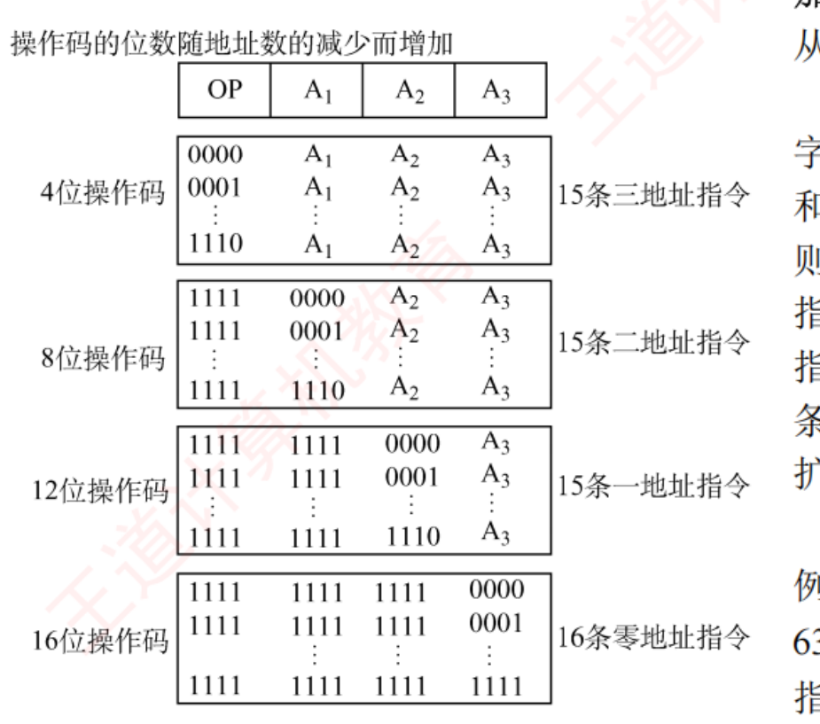
图 4.1 一种扩展操作码的安排方式 （书 p.150）。指令字长 16 位，4 位基本操作码 OP + 三个 4 位地址字段 A1 A2 A3 。看这张图只需盯住最左边那一列 1 的个数 ：4 位全 1 的 1111 是"通往二地址的门票"，8 位全 1 是"通往一地址的门票"，12 位全 1 是"通往零地址的门票"。每一级都必须留一个全 1 编码当门票，所以每级只能用 15 条而不是 16 条 ；最后一级不用再留门票，所以零地址是 16 条。
必记结论 · 图 4.1 的这套安排（15/15/15/16，共 61 条）
操作码位数 编码 条数 4 位 0000 A1 A2 A3 … 1110 A1 A2 A3 15 条三地址指令 8 位 1111 0000 A2 A3 … 1111 1110 A2 A3 15 条二地址指令 12 位 1111 1111 0000 A3 … 1111 1111 1110 A3 15 条一地址指令 16 位 1111 1111 1111 0000 … 1111 1111 1111 1111 16 条零地址指令
书上补充：
除这种安排外还有其他多种扩展方法 ，例如形成
15 条三地址、12 条二地址、63 条一地址和 16 条零地址，共 106 条 （读者自行分析）。
必记结论 · 设计扩展操作码的两条铁律（判对错题就靠它）
① 不允许短操作码成为长操作码的前缀 ，即短操作码不能与长操作码的前面部分相同。各指令的操作码一定不能重复。 使用频率较高 的指令分配较短 的操作码，以减少译码和分析时间。
我的补讲 · 扩展操作码题的两种口径，我都算过一遍——考场用第 ② 种
书上说 ：书答里其实混用了两种算法，从没点破它们是两种口径（第 10、15 题用①，第 11、12 题用②）。潜台词是 ：这两种口径互为验算，结果必然相同 ，但易错程度差很多 ：① 编码空间折算法 ：把一切折算到最低级（零地址） 的编码空间。一条 k 地址指令占用 2k·a 个零地址编码（a = 单个地址码位数）。例（2022 真题）：216 − 254×26 − 12×26 ×26 = 128 ② 逐级剩余前缀法 ：每级先算「本级编码总数 − 本级已用」＝ 剩余前缀数，再 ×2a 传给下一级。同一题：(24 −12)×26 = 256 → (256−254)×26 = 128 ✔ 结果一致 所以能考 Z ：口径①一步到位但极容易把"条数"和"编码数"混起来 （尤其指数写错一个 a ）；
口径②每一步的中间量都有物理意义（"还剩几个前缀没用"），算错了自己能看出来 。
我建议考场固定用②，用①做验算。
必记结论 · 扩展操作码通用递推式（进公式模板手册，背这三行）
设指令字长
L 、单个地址码长
a ，地址数从多到少逐级扩展：
第 1 级 （地址最多，设 k 1 个地址）：操作码位数 = L − k₁·a，编码总数 = 2L−k₁a
逐级递推 ：剩余前缀数 = 本级编码总数 − 本级已用条数；下一级可用编码数 = 剩余前缀数 × 2(本级少用的地址位数)
末级（零地址） 不再留门票，剩多少就能定义多少条
⚠️⚠️
最后一步别忘了：若题目说"按字节编址"，算出的指令字长必须向上取到 8 的倍数 （2017 真题：23 →
24 ）。
陷阱 · 2017 真题真正丢分的不是扩展操作码，是最后那一步取整
题：按字节编址，只有两种指令格式，三地址 29 条、二地址 107 条，每个地址字段 6 位，指令字长至少多少位？正确链条 ：29 条三地址 ⟹ 操作码至少 5 位（24 =16 < 29 ≤ 32）→ 剩 32 − 29 = 3 个前缀 → 二地址操作码多出 6 位（少一个地址码）⟹ 可有 3×26 = 192 ≥ 107 ✔ ⟹ 指令字长 5 + 6×3 = 23 位。⟹ 但答案是 24 位 ：因为按字节编址，指令字长必须是 8 的倍数 ，23 向上取整到 24 。k=5 → (2**5−29)*2**6 = 192 ≥ 107 ✔；k=4 → 2**4−29 < 0 ✘。先验证 5 位够不够，再验证 4 位行不行——两头都试才算做完。
知识串联 · 「短码不能是长码前缀」＝ 数据结构里的前缀码 ，同一件事的两个说法
数据结构 ch5 哈夫曼编码 的核心约束就是"任一编码都不是另一编码的前缀"，否则译码时会产生二义性。本节 扩展操作码的约束一字不差是同一条 ：若 1111 既是一条三地址指令的操作码，又是二地址指令的前缀，译码器读到 1111 就不知道该停还是该继续读 。再往下 「对高频指令分配短操作码」＝ 哈夫曼编码的"高频字符给短码" ，连优化目标（平均码长最短）都一样。「扩展操作码 = 硬件版的哈夫曼树，门票编码 1111 就是树上的内部结点」 。这样第 10~12 题那种"还剩几条"的题，你可以直接在草稿纸上画一棵树数叶子。计算机网络 变长编码"不能有前缀歧义"在网络里的对应物是 IP 前缀最长匹配 ——那里反过来允许 前缀重叠，靠"最长匹配"规则消歧。两边对着记，就不会记反。
我的补讲 · 综 03「设计 一个扩展操作码」——从"算条数"升级到"写编码"，多了两步
题 ：36 位指令，要能表示 7 条「两个 15 位地址 + 一个 3 位地址」、500 条「一个 15 位地址 + 一个 3 位地址」、50 条无地址指令。
书上说 ：给了三张字段图和二进制串，
但没说这些串是怎么定出来的 。
潜台词是 ：
"设计"题比"计算"题多两个动作——定字段宽度 和 写出编码区间 ：
定第一级操作码宽度 ：36 − 15 − 15 − 3 = 3 位 。7 条指令用 000～110，留 111 当门票
第二级 ：OP1 固定 111，把腾出来的那个 15 位地址字段整个变成 OP2（15 位）。500 条 ⟹ OP2 从 000000000000000（0）到 000000111110011（499 ）
第三级 ：OP1 仍是 111，OP2 从 500 （000000111110100）到 549 （000001000100101），共 50 条，低 18 位全 0
🐍 我把书上三个二进制串都用 Python 验过：
bin(499)/bin(500)/bin(549) 补足 15 位后与书上逐位吻合 ✔
所以能考 Z ：
设计题的答案不唯一，但必须满足两条铁律（短码不是长码前缀、编码不重复），而且要写出起止编码 而不只是条数 。
阅卷时"留了哪个编码当门票"和"编码区间的两端"就是采分点。
4.1.5 指令的类型
📄 p.151
考点追踪：转移指令、调用和返回指令、条件转移指令的区分（2019）
必记结论 · 六类指令（速记：传送 / 算逻 / 移位 / 控制 / IO / CPU 控制）
类型 典型助记符 要点 ① 数据传送 MOV、LOAD、STORE、PUSH、POP MOV 寄存器间；LOAD 内存→寄存器、STORE 寄存器→内存 ② 算术和逻辑运算 ADD SUB MUL DIV INC DEC AND OR NOT XOR 执行时自动设置条件码 （4.3 要用） ③ 移位操作 算术移位 / 逻辑移位 / 循环移位 三种移位的区别见 ch2 2.2 ④ 顺序控制 JMP、BRANCH、CALL、RET、TRAP 本类是考点集中区 ，见下方红块⑤ 输入输出 IN、OUT CPU 与外设交换数据/控制命令/状态，见 ch7 ⑥ CPU 控制 停机、开中断、关中断、模式切换 ⚠️ 只能在操作系统内核代码中使用 （＝特权指令）
陷阱 · 「调用指令」与「转移指令」的唯一区别，2019 真题就考这一句
无条件转移 在任何情况下都执行转移；条件转移 仅在特定条件满足时转移，转移条件通常是某个标志位的值或多个标志位的组合 。调用指令（CALL）会保存下一条指令的地址（返回地址） ，以便子程序结束后能返回；而转移指令（JMP）不返回，也就不保存任何东西 。4.3 里变成 call 压栈、ret 弹栈 ，在 ch5 里变成"中断隐指令保存断点" 。三处是同一句话的三种说法。 中断隐指令不是指令 ——它由硬件自动完成，不在指令系统里，更不属于程序控制类指令 （本节习题 05、4.2 习题 22 两次考它）。
我的补讲 · 为什么"CPU 控制指令只能在内核里用"这句话值得单独记
书上说 ：停机、开/关中断、系统模式切换这类指令只能在操作系统内核代码中使用，以防止用户误用 。潜台词是 ：这就是 OS 里"特权指令"四个字的硬件出处 。书在组原里只写了"防止误用"，
在《操作系统》里它有一整套机制：CPU 有内核态/用户态两个状态位（在 PSW 里），执行特权指令前硬件检查这一位，不对就产生"非法指令异常" 。所以能考 Z ：408 里有一类题问「下列指令中哪条是特权指令」——判据就是「这条指令能不能破坏别的进程」 ：
关中断能（会让 OS 失去控制权）、切换页表基址能、置程序状态字能 ，而加法、取数、转移都不能 。
再加一条容易漏的：「访管指令（trap/系统调用）恰恰是非特权指令」 ——它就是用户态用来请求 进入内核的那扇门，如果它本身是特权指令，用户就永远进不去了。
知识串联 · 「顺序控制指令」这一类，一个人牵着四科
本章 4.2 转移指令的目标地址怎么算 ⟹ 相对寻址 EA = (PC) + A （4.2 最高频考点，六考）。本章 4.3 jle / jg / jbe 靠标志位 决定跳不跳；call/ret 靠栈 存返回地址。ch5 CPU 条件转移指令是流水线"控制冒险"的唯一来源 ——因为取指时还不知道跳不跳，所以才需要分支预测。4.4 说 RISC 好流水，前提之一就是它的转移指令格式统一。 操作系统 TRAP（陷阱/访管）指令 = 系统调用的入口 ；CALL 保存返回地址 = 中断响应保存断点 ，两者的差别只有"谁触发的"（软件主动 vs 硬件被动）。数据结构 递归函数每层调用都压一个栈帧 ⟹ 4.3 的 2019 真题就是一道递归求阶乘的机器码题 ，读它需要同时会数据结构的递归和本节的 CALL/RET。
背景 · 考试不碰：六类指令里的助记符清单
ADD/SUB/MUL/DIV/INC/DEC/AND/OR/NOT/XOR 这些助记符统考从不单独考"这个缩写代表什么" ，题干里一定会给出功能说明（尤其 MIPS/RISC 风格指令）。
要记的只有两组 ：① LOAD/STORE （4.4 RISC 的核心特征）；② 4.3 的 x86 常用指令表 （那张要背，因为 x86 题不给说明）。其余划过即可。
我的补讲 · 4.1 这一节考完之后你手里应该只剩四样东西
这一节 8 页、19 道题、4 道真题，但真正会被考的只有四条，
其余都是为这四条铺路 ：
ISA 边界 ——「换个实现程序还跑不跑」（2022×2、2025，三年三考，本节第一高频 ）
扩展操作码递推 + 按字节编址取整 （2017、2021、2022，本节唯一的计算题型 ）
访存次数四格表 （零 1 / 一 3 / 二 4 / 三 4，含取指），注意与 4.2 表 4.1 的口径区分
CALL 保存返回地址、JMP 不保存；中断隐指令不是指令 （2019）
所以能考 Z ：如果你时间紧，4.1 这一节
只做这四类题 就够了，剩下的"指令类型六分类"属于读过就有印象的送分内容。
4.2 寻址方式 ⭐⭐ 全章失分密度第一（0.93 真题/页）
📄 p.156
寻址方式 是指确定指令或操作数有效地址的方法 ，包括确定下一条待执行指令的地址 （指令寻址）以及本条指令所需操作数的地址 （数据寻址）。
我的补讲 · 这一节 15 页只讲一件事：「指令里写的地址」不等于「真地址」
书上说 ：指令中的地址码字段所包含的地址称为
形式地址 A ，它
不代表操作数的真实地址 ；真实地址需通过寻址方式由形式地址计算得出，称为
有效地址 EA 。
潜台词是 ：
10 种寻址方式 = 从 A 算到 EA 的 10 个不同函数 。整节的题只有三类，且都从这句话派生：
题型 问什么 本节题号 真题 ① 算 EA 给你 A 和寄存器内容，求 EA 或求操作数 07/13/16/17/19/26/28/30/31 2013、2016、2018、2019 ② 算 PC （相对寻址）给你指令地址和偏移量，求转移后 PC 09/12/14/18/21/23 2009、2011、2013、2014、2019、2023 ③ 切字段 （⌈log₂⌉ 三段式）给你指令字长和种类数，求地址码位数与寻址范围 15/32/综03/综05 2010、2020、2021
所以能考 Z ：
10 种寻址方式的图（图 4.2–4.10）只需看懂"箭头走几步" ——走 0 步是立即/寄存器，走 1 步是直接/寄存器间接/三种偏移，走 2 步是间接。
剩下的力气全花在②和③上 ，那才是真题密集区。
4.2.1 指令寻址和数据寻址
📄 p.156
考点追踪：PC 自增大小与编址方式、指令字长的关系（2013、2014、2019、2023）
必记结论 · 指令寻址：顺序 vs 跳跃
（1）顺序寻址 ：通过 PC 加上当前指令的字节长度 ，自动形成下一条指令地址。PC 自增的大小与编址方式和指令字长有关。 现代计算机通常按字节编址，指令字长 16 位（2 字节）则 (PC)+2；32 位（4 字节）则 (PC)+4。（2）跳跃寻址 ：通过转移类指令实现。是否发生转移通常由状态寄存器中的条件码决定，转移目标地址由指令给出 。分两种：绝对转移 ：地址码直接给出目标地址； ・相对转移 ：地址码给出相对于当前 PC 值的偏移量。转移指令的执行结果都是修改 PC 的值 。
陷阱 · PC 增量 是本章第一坑，四道题构成一条完整证据链——先问编址单位，再问指令长度
口诀：PC 增量 = 指令长度 ÷ 编址单位 。别背结论，背这个除法。
题 编址方式 指令长度 PC 增量 结果 习 12 按字 编址 （字长 16 位）2 字节 = 1 个字 +1 4000H + 1 + 06H = 4007H 习 23 （2009）按字节 编址 2 字节 +2 2000H + 2 + 06H = 2008H 习 14 按字节 编址 16 位 = 2 字节 +2 2002H → 2002H + 40H = 2042H 习 18 按字节 编址 3 字节 +3 240 → 243 （基准）
习 12 与习 23 是刻意做成的一对 ：题面几乎逐字相同（4000H/06H vs 2000H/06H），
只有"按字编址"与"按字节编址"一词之差，答案就从 +1 变成 +2 。
⚠️ 我自己在读这一题时把「转移指令由两个
字节 组成」看成了「两个
字 」，算出 4008H 与书答不符，一度以为书错了——
放大到 dpi=320 复核才发现是自己抄错 。
凡是「字/字节」出现的题，读两遍再动笔。
知识串联 · ⌈log₂ n⌉ 这个动作，是 408 四门课里出现次数最多的一个式子
本章 操作码位数 = ⌈log₂ 指令条数⌉；寻址特征位数 = ⌈log₂ 寻址方式数⌉；寄存器编号位数 = ⌈log₂ 寄存器个数⌉。ch3 Cache 组号位数 = ⌈log₂ 组数⌉、块内地址 = log₂ 块大小、页内偏移 = log₂ 页大小 ——ch3 那些地址划分题，本质就是连做三次 ⌈log₂⌉ 。ch1 存储单元数 ⟹ MAR 位数 （2010 真题：128KB 按字编址、字长 16 位 ⟹ 216 个单元 ⟹ MAR 16 位）。数据结构 完全二叉树高度 = ⌈log₂(n+1)⌉、B 树的层数、折半查找次数 。「凡是"要几位才能编号 n 个东西"，一律 ⌈log₂ n⌉；凡是"n 位能编几个"，一律 2n 」 。
本章至少五道题、ch3 至少十道题只考这一个动作，先把它算到不用想。
数据寻址：形式地址 A 与有效地址 EA
考点追踪：指令格式字段位数的分析（2020）、指令格式中寻址特征字段的作用（2023）
操作码 OP⌈log₂(操作种类数)⌉ 位
寻址特征⌈log₂(寻址方式数)⌉ 位
形式地址 A剩下的全给它
必记结论 · ⌈log₂⌉ 三段式（本节第二大计算题型，四题共用）
形式地址位数 = 指令字长 − ⌈log₂(操作种类数)⌉ − ⌈log₂(寻址方式种类数)⌉n 之后，看题目问什么：直接寻址范围 ⟹ 写 0 ～ 2n −1 （主存地址是无符号数，不能为负 ）；相对寻址偏移量范围 ⟹ 写 −2n−1 ～ 2n−1 −1 （偏移量用补码，可正可负 ）。🐍 复算：习 15 ⌈log₂97⌉=7, ⌈log₂6⌉=3, 16−7−3=6 → −32~+31；习 32（2020）⌈log₂48⌉=6, ⌈log₂4⌉=2, 16−6−2=8 → 0~255
陷阱 · 同一个「8 位」，一题答 0～255，一题答 −128～127——差别只在问的是地址还是偏移量
2020 真题（习 32） 算出地址码 8 位，问「直接寻址方式的可寻址范围」⟹ 0～255 。
书上专门加了一句：「注意，主存地址不能为负。」 习 15 算出地址码 6 位，问「相对寻址的偏移量 范围」⟹ −32～+31 （6 位补码）。判据只有一条：这几位最后要"当地址用"还是"当加数用"。
当地址用 ⟹ 无符号；当加数用（要和 PC/BR/IX 相加）⟹ 补码有符号。
必记结论 · 形式地址位数决定什么（四条，逐条背）
・立即寻址 ⟹ 形式地址位数决定操作数的取值范围 ；直接寻址 ⟹ 决定可寻址的存储空间大小 ；寄存器寻址 ⟹ 决定通用寄存器的最大数量 ；寄存器间接寻址 ⟹ 由寄存器的位数（而非形式地址位数） 决定可寻址空间大小。【注意】(A) 表示地址 A 处所存放的内容，A 可以是寄存器编号或内存地址 。
我的补讲 · 第 4 条是个"反转"，2021 与 2024 真题都靠它出题
书上说 ：若为寄存器间接寻址，则寄存器的位数 决定了可寻址空间大小。潜台词是 ：前三条的主语都是"形式地址位数"，第四条突然换主语了 ——这不是笔误，是寄存器间接寻址的全部价值所在 ：
指令里只写一个寄存器编号 （32 个寄存器只要 5 位），而真正的地址装在那个 32 位寄存器 里。
用 5 位指令字段撬动 32 位地址空间 ——这就是书上说的"扩大了寻址范围，且不受形式地址位数限制"。所以能考 Z ：凡题目问"该机最多有多少个通用寄存器"，答案来自寄存器编号字段的位数 ；问"可寻址主存空间多大"，答案来自地址线位数或寄存器位数 ——两个数字来源不同，别混。
2021 真题（综 05）就是同一题里两问都问：寄存器编号 2 位 ⟹ 最多 4 个寄存器；地址线 20 位 ⟹ 1MB 。
我的补讲 · 习 03/04/05 三道"送分题"其实在考三个不同 的优点，别混成一个
这三题题干很像，答案却是三个不同的寻址方式，
因为问的是三件不同的事 ：
题 问什么 答案 为什么不是别的 习 03 缩短指令中某个地址段的位数 寄存器寻址 寄存器数量少 ⟹ 编号只要 ⌈log₂(寄存器个数)⌉ 位。立即寻址的地址段短了会限制操作数范围；变址/间接寻址的地址段仍与主存空间挂钩 习 04 简化地址结构 隐含寻址 "简化结构"＝干脆不给地址 （隐含在 ACC 里），比"给一个短地址"更彻底习 05 获取操作数最快 立即寻址 排序：立即（0 次访存，操作数已在指令里）＞ 寄存器（0 次访存但要访寄存器）＞ 直接（1 次）＞ 间接（2 次）
所以能考 Z ：
"缩短地址段"找寄存器寻址、"简化地址结构"找隐含寻址、"最快"找立即寻址 ——
注意"最快"为什么不是寄存器寻址 ：立即寻址的操作数
在取指时就已经跟着指令一起进 CPU 了 ，
执行阶段一次都不用去取 ；
寄存器寻址还得去寄存器堆读一次。
这半拍就是它俩的差别。
4.2.2 常见的数据寻址方式（10 种）
📄 p.157
我的补讲 · 10 张图别一张张背，按「取操作数要走几步」 排成一条线
书把 10 种方式一字排开，看着像 10 个并列的知识点。
其实它们在一条直线上 ，坐标就是
执行阶段的访存次数 ：
走几步 寻址方式 EA 执行阶段访存 换来了什么 0 步 立即寻址 A 本身就是操作数 0 最快 ，但数值范围受形式地址位数限制0 步 寄存器寻址 EA = Ri 0 快 + 指令短，但寄存器贵、数量有限 1 步 直接寻址 EA = A 1 简单，但地址固定、范围受限 1 步 寄存器间接 EA = (Ri ) 1 范围不受形式地址限制 ，比间接寻址少一次访存1 步 相对 / 基址 / 变址 EA = (PC / BR / IX) + A 1 三种偏移寻址，本节真题主场 2 步 一次间接寻址 EA = (A) 2 范围最大、可做指针/转移表，但最慢 隐含 隐含寻址 另一个操作数在 ACC — 缩短指令字长 ，代价是依赖专用硬件隐含 堆栈寻址 由 SP 隐含给出 — 指令表面无操作数，SP 自动更新
所以能考 Z ：题目问"最快 / 最慢 / 无须访存 / 需两次访存"，直接读这一列；
问"扩大寻址范围"的有
间接、寄存器间接、基址 三种（理由各不同，见下面各条）；
问"缩短指令字长"的有
隐含、寄存器 两种。
把优缺点按"用什么换什么"记，比按方式记省一半。
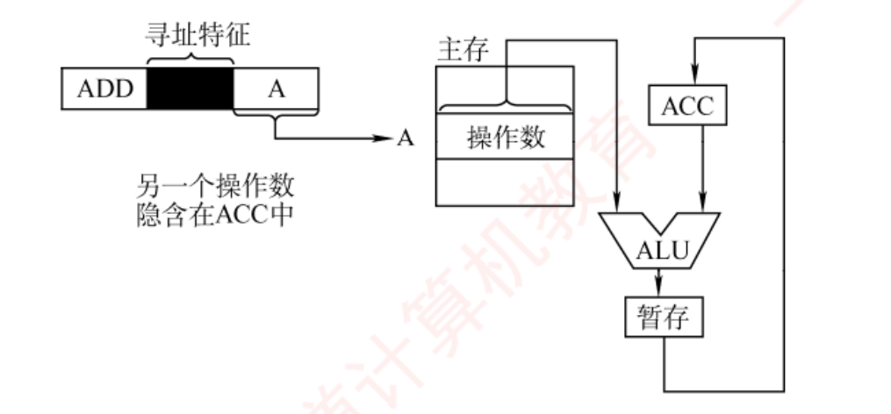
图 4.2 隐含寻址 。1. 隐含寻址 ：指令中不显式给出操作数地址 ，而将其隐含在特定寄存器 （如累加器 ACC）中。优点 ：有效缩短指令字长；缺点 ：依赖存储隐含操作数的硬件。
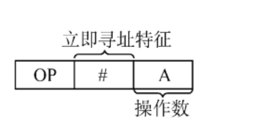
图 4.3 立即寻址 （考点追踪：立即寻址的概念，2023）。2. 立即寻址 ：形式地址字段直接存放操作数本身 （称立即数，通常以补码表示 ），# 是立即寻址特征。优点：执行阶段无须访存，速度最快 ；缺点 ：数值范围受形式地址位数限制。
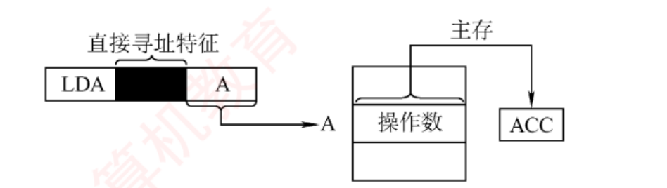
图 4.4 直接寻址 （考点追踪：地址位数与直接寻址范围的关系，2010、2021）。3. 直接寻址 ：EA = A 。优点 ：实现简单、执行阶段只访存一次；缺点 ：位数限制范围，且地址固定难以动态修改 。例：形式地址 24 位 ⟹ 范围 224 = 16M。
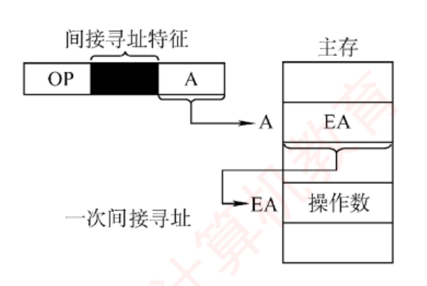
图 4.5 间接寻址 （考点追踪：间接寻址 EA 的分析，2016）。4. 间接寻址 ：EA = (A) ，A 指向的主存单元里装的是有效地址。优点 ：可扩大寻址范围 （EA 位数由存储字长 决定，通常大于 A），支持指针与转移表 ；缺点 ：一次间址需 2 次访存 。
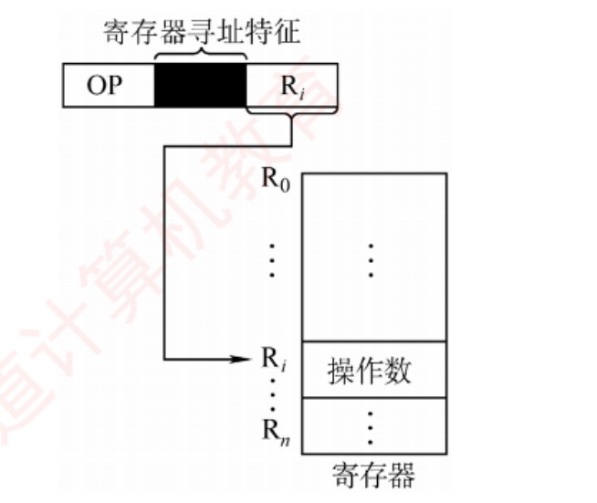
图 4.6 寄存器寻址 （考点追踪：寄存器编号位数与寄存器数量的关系，2022、2024）。5. 寄存器寻址 ：EA = Ri ，地址字段给的是寄存器编号 。32 个通用寄存器只需 5 位编号。优点 ：执行阶段无须访存 、地址码短；缺点 ：寄存器成本高、数量有限。
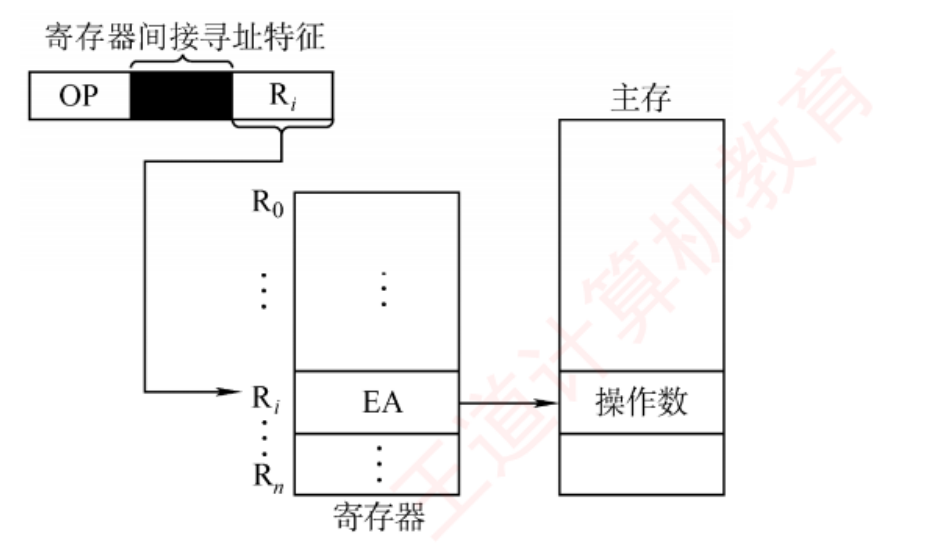
图 4.7 寄存器间接寻址 （考点追踪：寄存器间接寻址的取数操作，2010）。6. 寄存器间接寻址 ：EA = (Ri ) ，Ri 里装的不是操作数而是操作数的主存地址 。比间接寻址少一次访存 ；比寄存器寻址多一次访存 ，但寻址范围不受形式地址位数限制 。
陷阱 · 习 17 问的是「有效地址 」不是「操作数」——一字之差，答案差一级
题：寄存器编号 8，8 号寄存器内容 1200H，地址 1200H 处内容 12FCH，12FCH 处内容 38D8H……问该操作数的有效地址 。EA = (Ri ) = 1200H （选 A）；而"操作数"才是 12FCH 。本节所有间接类题目，动笔前先把题干里的"有效地址 / 操作数 / 访问到的内容"圈出来。
对照习 16 与习 26：习 16 问"访问到的操作数为 200"、习 26（2013）问"访问到的操作数"——那两题才是要多走一步的 。
我的补讲 · 习 11 的小端取数题："内存里两个字节" ≠ "寄存器里的那个数"
题 ：R2 = 1234H，(1234H) = 56H，(1235H) = 78H，小端方式 ，执行 MOV R1, [R2] 后 R1 = ？书上说 ：因为采用小端方式，所以实际存储的数据为 7856H 。潜台词是 ：书这句话说得太快。完整过程是三步 ：EA = (R2) = 1234H ；要连读两个字节：1234H 和 1235H ；小端 = 低地址存低字节 ⟹ 1234H 里的 56H 是低 字节，1235H 里的 78H 是高 字节 ⟹ 拼起来 R1 = 7856H 。所以能考 Z ：这题和 4.2 习 19/31（大端 LSB）是一对镜像 ——
习 11 是"给字节推数值"（小端），习 19/31 是"给数值推字节地址"（大端） 。两个方向都要会走。 速记法 ：小端 = 「低地址放低字节」= 数值倒着摆 ；大端 = 「低地址放高字节」= 数值正着摆（和人读数一样） 。
看到内存里是 56 78 而答案是 7856H，就是小端；答案是 5678H，就是大端。
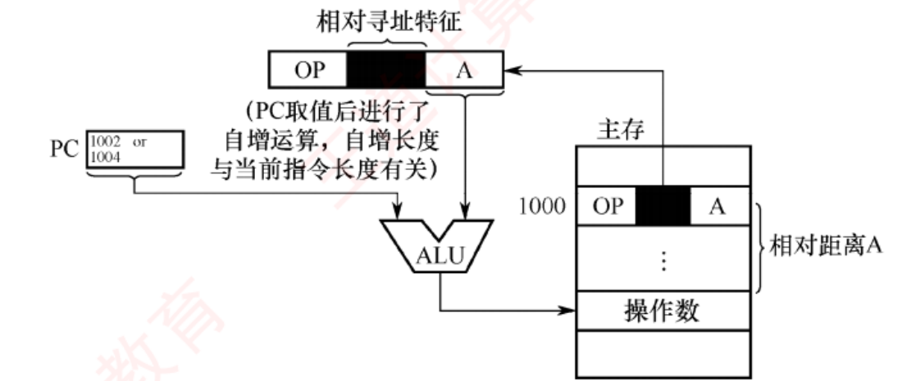
图 4.8 相对寻址 （考点追踪：相对寻址的相关分析与计算，2009、2010、2013、2014、2019、2023 六考，全章第一 ）。7. 相对寻址 ：EA = (PC) + A 。看图只需盯住 PC 那个方框里写的「1002 or 1004」和旁边那句注 ——「PC 取值后进行了自增运算，自增长度与当前指令长度有关 」。这就是全章最贵的一句注。
必记结论 · 相对寻址三条（六考，本节最高频）
① EA = (PC) + A ，其中 PC 是取指完成后自动更新的值，指向下一条 指令的地址 ；A 是相对于该 PC 值的偏移量，可正可负，通常以补码表示 。相对寻址主要用于转移类指令 ，形式地址 A 的位数决定了转移范围。优点 ：目标地址不固定而是相对当前位置偏移，因此程序可在内存中任意浮动而不影响转移正确性，便于实现重定位和共享代码 。书上例子 ：按字节编址、指令长 2B，JMP A 位于 1000H，A = 0005H ⟹ 取指后 PC = 1002H ⟹ 目标地址 = 1002H + 0005H = 1007H 。
陷阱 · 偏移量的单位可能是「指令条数 」而不是字节——看到 ×2 就换单位
本节有两处偏移量不是字节数 ：PC = PC + 2 + Imm8×2 ・综 04（2013 真题）：目标地址 = (PC) + 2 + 2×OFFSET 那个 ×2 的含义是：Imm8/OFFSET 数的是"跳几条指令"，一条指令 2 字节，所以要 ×2 才变成字节偏移。 于是转移范围的口径固定为「前 127 条 ～ 后 128 条」 ，而不是对称的 ±128：
8 位补码范围 −128～+127，但 PC 已经先自增了一条指令 ，所以往回最远 −128+1 = 前 127 条，往前最远 +127+1 = 后 128 条 。三处口径完全一致，背下来直接用 。
知识串联 · 相对寻址的"程序可任意浮动"，就是《操作系统》的程序重定位
操作系统 内存管理里的「与位置无关代码（PIC）」 之所以可能，硬件基础就是相对寻址：整段程序搬到哪儿，内部的相对转移都还对 ——因为 PC 和目标一起搬走了，差值不变。操作系统 而绝对转移 的程序搬家后就废了，必须重定位 （改写地址）：静态重定位 = 装入时改一遍；动态重定位 = 运行时靠基址寄存器加一次 ——后者就是下面要讲的基址寻址 。本章 4.3 2019、2023 两道真题里的 call、jmp、jge 全都采用相对寻址 ，判据就是"机器码里那几个字节正好等于目标地址 − 下一条指令地址"。「相对寻址是硬件给"程序可以搬家"开的通行证」 。
知识串联 · 间接寻址的那句「易于完成子程序返回 」（4.6 速查表），指的就是 4.3 的 ret
本章 4.3 ret 干的事是「把栈顶那个单元里存的地址取出来送 PC 」——这就是一次间接寻址 （地址的地址在栈顶）。本章 4.1 而零地址指令 之所以能实现返回，也靠它：地址由 SP 隐含给出，内容才是真地址 。操作系统 中断返回指令 IRET 同理——从内核栈取出断点送 PC 。数据结构 而「地址的地址」在 C 里就是二级指针 ，间接寻址支持"地址动态生成（指针和转移表）"这句书上原话，
说的正是 函数指针数组 / switch 跳转表 ——编译器把 switch 编译成"查表 + 间接跳转" 。「间接寻址慢，但它是一切"运行时才知道跳哪"的机制的地基」 ：返回、虚函数、跳转表，全靠它。
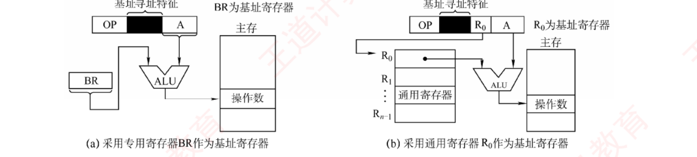
图 4.9 基址寻址 （考点追踪：基址寻址的 EA 计算，2019）。8. 基址寻址 ：EA = (BR) + A 。左图 (a) 用专用基址寄存器 BR ，右图 (b) 用指定的通用寄存器 R0 ——两张子图的差别只在"BR 从哪来"，加法器那一步完全相同 。注意 (b) 图里指令多了一个 R0 字段 ，这就是"用通用寄存器当基址"的代价：指令里得多花几位写寄存器编号 。
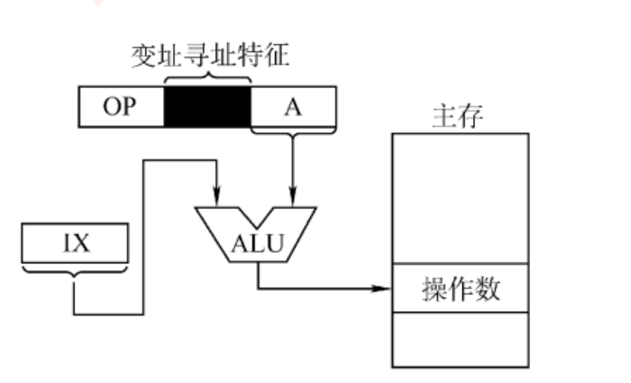
图 4.10 变址寻址 （考点追踪：变址寻址 EA 的相关计算，2013、2016、2024；变址寻址的特点与应用，2017、2018、2024——合计六考 ）。9. 变址寻址 ：EA = (IX) + A 。和图 4.9(a) 摆在一起看 ：两张图的线路一模一样 ，只把 BR 换成了 IX。硬件上它们是同一个加法器，区别全在"谁有权改这个寄存器" ——见下面的对照表。
必记结论 · 基址 vs 变址（书上原文的核心表，三行必须能默写）
对比项 基址寻址 变址寻址 有效地址 EA = (BR) + A EA = (IX) + A 访存次数 1 1 寄存器内容由谁定 由操作系统或管理程序确定 （面向系统 ）由用户设定 （面向用户 ）执行过程中值可变否 不可变 （作基地址）可变 （作偏移量，程序里动态改）谁当基地址、谁当偏移 寄存器 = 基地址，形式地址 A = 偏移量 形式地址 A = 基地址，寄存器 = 偏移量 特点 / 适用 有利于多道程序设计和编制浮动程序 有利于处理数组问题和编制循环程序
我的补讲 · 基址与变址硬件完全一样，为什么还要分成两种？——因为分的是「谁是常量」
书上说 ：二者均通过「寄存器内容 + 形式地址」生成有效地址，但本质不同 ：基址面向系统、变址面向用户。潜台词是 ：书讲了"谁设定"，但没讲为什么非要这么分 。真正的区别是哪一半在循环里不动 ：基址寻址 ：寄存器不动 （程序装到哪儿由 OS 定，装完就固定），A 在变 （访问程序里的不同位置）。
⟹ 一个程序有一个基址，一个程序内部有无数条指令。 变址寻址 ：A 不动 （数组首地址就那一个），寄存器在变 （i = 0,1,2,…）。
⟹ 一个数组有一个首地址，一次循环要走无数个下标。 所以能考 Z ：看到「多道程序 / 浮动 / 重定位 / 操作系统设定」⟹ 基址；看到「数组 / 循环 / 下标 / 用户修改」⟹ 变址。
书上的变址例子就是这个结构：数组 B 首地址 1000H 放在 A 里不动，IX 置 0CH（= 3×4）取 B[3]，EA = 0CH + 1000H = 100CH 。
而 4.3 的 [edx+esi*4]、2024 真题的 slli r4,r2,2 / add r4,r3,r4 全都是这个变址结构的现代写法。
必记结论 · 三种偏移寻址（2011 真题就考这一句）
考点追踪：偏移寻址的范畴（2011） 相对寻址、基址寻址和变址寻址均属于偏移寻址 ，共同特点是通过某个寄存器的值与形式地址相加 来确定有效地址。⚠️ 间接寻址不属于偏移寻址 ——它不需要任何寄存器 ，EA = (A) 是"再访存一次"而不是"加一次"。2011 真题（习 24）正是选它。
我的补讲 · 习 27（2014）：「操作码字段（含寻址方式位）为 8 位」 ——这个括号值 4 分
题 ：16 个通用寄存器、32 位定长指令字、操作码字段（含寻址方式位）为 8 位 ；STORE 的源操作数用寄存器直接寻址、目的操作数用基址寻址，基址寄存器可以是任意通用寄存器，偏移量用补码。问偏移量取值范围。书上说 ：32 − 8 = 24 位给两个地址码；源操作数的寄存器编号 4 位、目的操作数的基址寄存器编号也要 4 位 ，剩 24 − 4 − 4 = 16 位 给偏移量 ⟹ −32768 ～ +32767 。潜台词是 ：这题有两个容易漏的减法 ：「含寻址方式位」 ——意思是寻址特征那几位已经算在 8 位里了 ，不要再单独减一次 。不看这个括号的人会多减 2~3 位。 基址寻址也要指定一个寄存器 ——题里说"基址寄存器可使用任意一个通用寄存器"，那就必须在指令里写出是哪一个，又花掉 4 位 。
只减源操作数那 4 位的人会算出 20 位。 所以能考 Z ："任意一个通用寄存器"这七个字＝"指令里要留编号字段" ；反过来"专用基址寄存器 BR"＝"不用留字段" （对照图 4.9 的 (a) 和 (b) 两个子图，
(b) 图指令里确实多画了一个 R0 字段 ）。那张图不是装饰，它就是这一分的出处。
必记结论 · 10. 堆栈寻址
堆栈 是存储器（或寄存器组）中一块按后进先出 原则管理的存储区，读/写单元的地址由堆栈指针 SP 给出。硬堆栈 ：由高速寄存器构成，成本高、容量小 ；软堆栈 ：从主存划出一段区域，更经济实用 （现代机器都是软堆栈）。表面上表现为无操作数形式 ，因为操作数地址由 SP 隐含指定；访问堆栈时 SP 会自动更新 指向新栈顶。
知识串联 · 堆栈寻址一条线穿起四个地方 ，是本章最"低调"的枢纽
本章 4.1.2 零地址指令 （堆栈计算机的运算指令，操作数隐含从栈顶与次栈顶弹出）。本章 4.3.4 运行时栈与栈帧 ：push/pop/call/ret 全靠 SP（x86 里叫 ESP）；「访问堆栈时 SP 自动更新」这句话，在 4.3 具体化成"push 前 ESP−4、pop 后 ESP+4" 。数据结构 栈的顺序存储 ：SP 就是栈顶指针 top；"栈向低地址增长"只是把数组下标反过来数而已 。操作系统 中断/异常的现场保护压内核栈 ；进程控制块里保存的 SP 就是这个寄存器 ；进程地址空间里"栈向下、堆向上" 。「软堆栈就是主存里划出来的一段」这句看似无关紧要的话，是上面四处能对起来的物理前提 ——
正因为它在主存里，所以它可以很大（支持深递归）、可以被越界写坏（栈溢出攻击）、也需要页表来管。
必记结论 · 表 4.1 寻址方式、有效地址及访存次数（不含取本条指令 ，与 4.1 那张表口径不同）
寻址方式 有效地址 执行阶段访存次数 立即寻址 A 即是操作数 0 直接寻址 EA = A 1 一次间接寻址 EA = (A) 2 寄存器寻址 EA = Ri 0 寄存器间接一次寻址 EA = (Ri ) 1 相对寻址 EA = (PC) + A 1 基址寻址 EA = (BR) + A 1 变址寻址 EA = (IX) + A 1
我的补讲 · 习 28（2016）「先变址后间址 」：复合寻址题只需按字面从右往左读
题 ：指令格式 [OP | M | I | D]，M 是寻址方式、I 是变址寄存器编号、D 是形式地址。先变址后间址 的 EA = ？答案是 ((I) + D) ，推导只有两步，照着中文语序做即可 ："先变址" ⟹ 算出 (I) + D（变址寻址的 EA 公式）；"后间址" ⟹ 把上一步的结果再套一层括号 （间接寻址 = 再访存一次）⟹ ((I) + D)所以能考 Z ：括号的层数 = 访存的次数 。这一族题的所有干扰项都是括号打错位置：(I) + D（少一层 = 只做了变址，忘了间址） ・((I)) + D（括号套错了地方 = 先间址后变址） ・I + D（把寄存器编号 当成了内容 ）。最后这个错最隐蔽 ：I 是编号，(I) 才是内容A 可以是寄存器编号或内存地址 」就是为这一题铺的。
我的补讲 · 习 30（2018）：数组题的"反向"问法——给你地址，倒推下标
题 ：double 数组 A 首地址 2000H，变址寄存器初值 0，偏移地址 = 变址值 × sizeof(double) ，每轮加 1。某次所取元素地址为 2100H，此时变址寄存器是多少？解法就是把变址公式 EA = (IX)×8 + A 反过来解 ：(IX)×8 = 2100H − 2000H = 100H = 256 ⟹ (IX) = 256 ÷ 8 = 32 （🐍 复算 ✔）潜台词是 ：这题的坑不在计算，在单位 ——算出来的 256 是"字节偏移"，不是"下标" ，还要再除以元素大小 8 。
选项里 A. 25、C. 64、D. 100 全是"少除/多除/算错元素大小"造出来的 ：
选 C（64）＝ 把 256 当成了 100H 的十进制读错；选 D（100）＝ 直接把 100H 当十进制 。所以能考 Z ：「地址差 ÷ 元素字节数 = 下标差」是本章数组题的通用反解式 ，
它和 4.3 里 slli r4,r2,2（下标 ×4 变字节偏移）是同一个式子的两个方向 。正着走用乘、反着走用除，记住"乘/除的都是元素字节数"。
知识串联 · 「立即数通常以补码表示」这半句，是 ch2 在本章的第一次现身
ch2 2.2 补码的两条性质在本章被反复调用：
① 符号扩展只补符号位 （正数补 0、负数补 1）；
② n 位补码范围 −2n−1 ～ 2n−1 −1，正负不对称 。
本节 性质 ① 用在
习 18（8 位补码扩到 16 位，第三字节写 00H 还是 FFH） 与
习 31 / 2019 真题（FF12H 扩成 FFFF FF12H） ；
本节 性质 ② 用在
一切"偏移量范围"题 （习 15 的 −32~+31、习 27 的 −32768~+32767）。
本章 4.3 性质 ② 还会在
2025 真题的除法溢出（最小负数 ÷ −1） 里再用一次。
⟹
一句话：「凡是指令里那几位要参与加法，它就是补码；凡是要当地址用，它就是无符号」 ——
这一条判据同时解决了"要不要符号扩展"和"范围写不写负数"两个问题。
我的补讲 · 计算 ① 大端方式下 LSB 的地址 ——习 19 与 2019 真题是同题异构，必须成对做
书上说 （习 19 答案）：因为是
大端方式 ，所以 LSB 的存放地址为 EA + 3。
潜台词是 ：书直接给了 +3，没说为什么。
+3 来自「操作数占 4 字节」 ，通式是：
大端：LSB 地址 = EA + (字节数 − 1) 小端：LSB 地址 = EA
因为
大端把最高有效字节放在最低地址 （"高位在前"），所以最低有效字节被挤到了最后一格。
所以能考 Z ：这两题的完整链条是
三步 ，每一步都能单独设坑：
符号扩展 ：形式地址是 16 位补码负数 ⟹ 先扩成 32 位再相加。
算 EA ：EA = (BR) + A。BFFF FF00H ；2019：F000 0000H + (−00EEH) = EFFF FF12H
定位 LSB ：大端 ⟹ +3 。习 19 → BFFF FF03H ；2019 → EFFF FF15H
🐍 我两题都复算过：
(0xC0000000 + 0xFFFFFF00) mod 2³² = 0xBFFFFF00、
0xF0000000 − 0xEE = 0xEFFFFF12 ✔
⚠️ 2019 真题的答案里书特意写了一句
「注意，内存地址是无符号数」 ——意思是
相加的结果按 32 位无符号回绕，别去讨论"溢出" 。
我的补讲 · 计算 ② 拆指令字段 ——习 13 与综 01 是同一个模具压出来的两道题
书上说 （习 13）：将 2222H 展开成二进制
0010 0010 0010 0010B，第 8～9 位为 10，即用 X2 变址。
潜台词是 ：这类题的机械流程
永远是这四步 ，练熟了 40 秒能做完：
十六进制 → 二进制 ：一位十六进制 = 四位二进制，直接拆，别心算
按题给位段切开 ：如「低 0～7 位 = D，8～9 位 = X，10～15 位 = OP」
查表定寻址方式 ：X=00 直接 / 01 变址 X1 / 10 变址 X2 / 11 相对
套 EA 公式 。⚠️ 若是相对寻址，基准是取指后的 PC，不是题给的 PC！
综 01 的第 4 步就是全题唯一的坑 ：题给 (PC) = 1234H，
但主存按字 编址、指令 1 个字 ⟹
取指后 PC = 1235H 而不是 1236H 。
于是 ③ 1322H 的 EA =
1235H + 22H = 1257H，⑤ 6723H 的 EA =
1235H + 23H = 1258H。
🐍 复算：
(0x1322>>8)&3 = 3（相对）、
0x1235+0x22 = 0x1257、
0x1235+0x23 = 0x1258 ✔
所以能考 Z ：
这一题把「PC 增量」和「拆字段」缝在了一起 ——先前那张 PC 增量表在这里第五次出现。
做完这题再回头看一眼那张表。
我的补讲 · 计算 ③ 标志位判转移条件 ——习 21 与习 25（2011）合起来才是完整的一张卡
书上说 ：习 25（2011 真题）无符号"大于"的条件是
CF + ZF = 0；习 21 有符号"大于"的完整条件是
ZF + (SF ⊕ OF) = 0。
潜台词是 ：
比较 = 做减法，然后看标志位 。两条公式的结构完全一样，都是
「不等于 0」＋「大小关系」 ：
比较类型 "大于"的条件 拆开看 为什么 无符号 CF + ZF = 0 CF = 0 （没借位 ⟹ A ≥ B）ZF = 0 （不相等）无符号数只有借没借位这一个信息 有符号 ZF + (SF ⊕ OF) = 0 SF ⊕ OF = 0 （结果真的为正）ZF = 0 （不相等）溢出会把符号位翻过来，所以要用 OF 把 SF 纠正回来
SF ⊕ OF 为什么等于"真的为正" ：没溢出时 OF=0，SF 就是真符号；溢出时 OF=1，SF 是
错的 ，异或一下正好翻回来。
书上的说法是「要么 SF=OF=0（未溢出），要么 SF=OF=1（溢出）」——这两句是一回事。
所以能考 Z ：
习 21 的 C 选项之所以是错的，就因为它只写了 SF ⊕ OF = 0，漏掉了 ZF = 0 （那样 A = B 时也会转移）。
两条公式都必须带 ZF = 0，这是唯一的共同点，也是唯一的考点。
⚠️ 习 25 的四个选项里有三个用了 SF 或 OF——书上一句话排除：
「对于无符号数运算，SF 和 OF 没有意义」 。
知识串联 · CF、OF、SF、ZF 这四个标志，是 ch2 与 4.3 之间的直通车
ch2 2.2 四个标志的产生规则 在那里讲过：OF = 次高位进位 ⊕ 最高位进位CF = Cout ⊕ Sub本节 4.2 四个标志的使用规则 ：条件转移指令读它们决定跳不跳。本章 4.3 四个标志的计算现场 ：习 01/02/03 和 2024 综 05 都要你手算 CF 和 OF 。ch5 CPU 这四位物理上住在标志寄存器（PSW 的一部分） 里，由 ALU 输出端直接产生——2013 综 04 和 2024 综 05 的数据通路图上都能看到它们从 ALU 引出来 。「ch2 教你怎么算出这四位，4.2 教你怎么读这四位，4.3 让你两件事一起做，ch5 告诉你这四根线长在哪。」
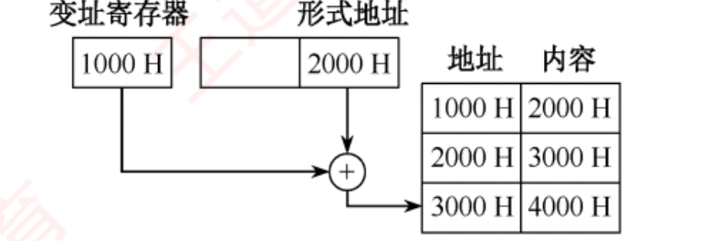
补图（书 p.169 习 26 答案配图） 变址寻址的"三级取数" （2013 统考真题）。这张图是本节最好的防错工具 ：变址寄存器 1000H 与形式地址 2000H 相加 得 3000H ，再按 3000H 访存 取出操作数 4000H 。注意左边那两个方框只是"加数"，右边的地址表才是"访存" ——题里给的 (1000H)=2000H 是干扰项，变址寻址根本不去读 1000H 这个单元 。
陷阱 · 2013 真题（习 26）的干扰项设计：给你一张地址表，其中两行是用不上的
题给：变址寄存器 R = 1000H，形式地址 = 2000H；(1000H) = 2000H，(2000H) = 3000H，(3000H) = 4000H。正解 ：EA = (R) + A = 1000H + 2000H = 3000H ⟹ 操作数 = (3000H) = 4000H 。三个错误选项各对应一种误读 ：算出 EA 就交卷了，忘了再访存一次取操作数 （本题最容易中的一个 ）；习 17 问 EA（答 1200H，走一步就停）、习 26 问操作数（答 4000H，要走两步） 。同一族题，问法不同，停的位置不同。
我的补讲 · 综 03（2010）那道"读机器码 + 追内容变化"的题，是 4.2 通向 4.3 的桥
书上说 ：
add (R4), (R5)+ 的机器码是 2315H，执行后 R5 变 5679H、存储单元 5678H 变 68ACH。
潜台词是 ：这是全章唯一一道
「双向」 题——既要
由汇编写出机器码 ，又要
由机器码追出副作用 。它的解法有固定四步：
切字段 ：OP(4) | Ms(3) | Rs(3) | Md(3) | Rd(3) = 16 位。add=0010、寄存器间接 Ms=001、R4=100、寄存器间接自增 Md=010、R5=101
拼二进制再转十六进制 ：0010 0011 0001 0101B = 2315H（🐍 复算 ✔）
逐级取内容 ：(R4)=1234H → (1234H)=5678H；(R5)=5678H → (5678H)=1234H；相加 5678H + 1234H = 68ACH
别忘副作用 ：Md 是「寄存器间接自增 」⟹ R5 从 5678H 变成 5679H 。结果写回 (R5) 所指单元 5678H，改成 68ACH
所以能考 Z ：
第 4 步（自增副作用）是最容易漏的采分点 ——题问的是"
哪些 寄存器和存储单元会改变"，
答"5678H 单元变 68ACH"只答了一半，还得答"R5 变 5679H" 。
这个"读完机器码还要追副作用"的习惯，
到 4.3 会天天用 （那里的副作用叫 ESP 变化、标志位变化）。
我的补讲 · 习 33（2023）与习 22：两道"叙述题"合起来，把寻址方式在 ISA 里的地位 钉死了
习 33（2023 真题） ：一个地址码是通用寄存器编号，寄存器里可能装操作数、也可能装操作数地址，
CPU 靠什么区分 ？
答：靠操作数的寻址方式 （选 A）。理由：
指令字由操作码、寻址特征 和地址码三个字段组成，寻址特征字段就是用来指明"属于哪种寻址方式"的 。
关键是排除 D「通用寄存器的内容」 ——
寄存器里就是一串二进制位，它自己不会说明"我是数还是地址" ，这个信息只能来自指令。
习 22 的 D 选项 ：「数据寻址方式不属于 ISA 规定的内容」——
错，数据寻址方式是 ISA 的核心内容 （回扣 4.1.1 那张对照表）。
潜台词是 ：
这两题合起来说明了一件事——"一串二进制位是什么"永远由指令 决定，不由数据 决定。
所以能考 Z ：
这条原则在 408 里反复出现 ：
ch2 的「同一个机器数，按无符号读和按补码读是两个值」；4.3 的「同一条 add 指令既设 CF 又设 OF，看哪个由你决定」；OS 的「同一段内存，是代码还是数据由页表权限位决定」——
全是同一句话。
知识串联 · 习 22 那句「中断隐指令不属于指令寻址」，是 ch5 与本章的分界桩
本章 4.1.5 中断隐指令不是指令 ——它不在指令系统里，没有操作码，也不会被取指 ，所以更不属于"程序控制类指令" （习 05）。本节 4.2 它也不属于指令寻址的范畴 （习 22 A，对）——因为"指令寻址"讲的是"下一条指令地址怎么来"，而中断隐指令是硬件在指令周期结束后插进来 的一串微操作 。ch5 到 ch5 你会看到它的全貌：关中断 → 保存断点 → 引出中断服务程序 三步，全部由硬件自动完成，程序员既写不出它也看不见它 ⟹ 所以它也不在 ISA 里 （回扣 4.1.1）。操作系统 OS 里说的"中断响应"就是这三步；OS 讨论的是响应之后的事（中断处理程序），组原讨论的是响应本身。 一句话：「中断隐指令」这五个字里，唯一真实的是"隐"——它隐到既不是指令、也不在 ISA、也不参与寻址。
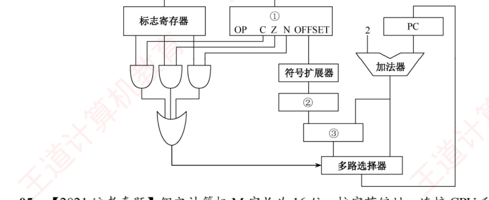
补图（书 p.165 综 04） 2013 统考真题：条件转移指令的数据通路 。①=指令寄存器 IR （存放当前指令，所以下面标着 OP C Z N OFFSET）、②=移位寄存器 （左移一位实现 ×2）、③=加法器 （把 PC+2 与 2×OFFSET 相加）。看图的顺序：从 IR 里取出 OFFSET → 符号扩展器 → ② 左移 ×2 → ③ 与 PC+2 相加 → 多路选择器 ；左半边三个与门 + 一个或门在做另一件事——把 C/Z/N 检测位与标志寄存器逐位相与再相或，实现"需检测的标志中只要有一个为 1 就转移" 。这张图是 ch5 数据通路 的预演。
我的补讲 · 综 04（2013）第 2 问：为什么要"符号扩展 → 左移"而不是"左移 → 符号扩展"
书上说 ：偏移量 1110 0011B = E3H，符号扩展后为 FFE3H，左移一位（乘 2）后为 FFC6H ，因此 PC = 200CH + 2 + FFC6H = 1FD4H 。潜台词是 ：书按图上的顺序照做了，没解释顺序为什么不能反。原因是：8 位的 E3H 左移一位会把最高位挤掉 （E3H << 1 在 8 位里 = C6H，符号位从 1 变成 1 纯属巧合 ），而 先扩成 16 位再移，符号信息就一直在最高位保着 。所以能考 Z ：凡是"补码窄字段要参与宽字长运算"，一律先符号扩展再做别的 ——这条规则在本章出现了四次：
习 18（8 位补码扩到 16 位）、习 31 / 2019 真题（16 位扩到 32 位）、本题（8 位扩到 16 位再左移）、
2024 综 05 第 4 问（12 位 imm 扩到 32 位，控制信号 Ext = 1） 。0xE3 符号扩展 = 0xFFE3 = −29；−29×2 = −58；0x200C + 2 − 58 = 0x1FD4 ✔答 127 条而不是 128 条 ——因为 OFFSET 最小 −128，但 PC 已先自增 +2（一条指令） ，抵掉一条。
知识串联 · 2021 综 05 那道"R/I/J 三型指令"，其实是 RISC-V/MIPS，它是 4.4 与 ch5 的伏笔
本章 4.4 R 型 R[rd] ← R[rs] op R[rt] 是三地址、寄存器-寄存器 运算；I 型含访存；J 型只改 PC 低 10 位——这正是 4.4 说的 RISC 特征：定长、格式少、只有 LOAD/STORE 访存 。ch5 三种格式的操作码位置固定在最高几位 ，所以译码器可以在还不知道是哪型指令时就开始译码 ⟹ 这是流水线能开动的前提 。本节 第 2 问的"操作码空间共享"是个高级点：I 型与 J 型共用 6 位操作码，且 000000 已被 R 型占用 ⟹ 26 − 1 = 63 种，别顺手写成 64 。这就是 4.1 扩展操作码「留一个编码当门票」的同一个套路，换了个马甲。 2024 真题 综 05/06 用的 add / slli / lw 就是同一族 RISC 指令 ，两年真题可以对着做 。
我的补讲 · 综 05（2021）第 1 问：ALU、IR、MAR、MDR 四个位数各有各的来源 ，一个都不能串
题 ：字长 16 位、按字节编址、
地址线 20 位、数据线 8 位 、16 位定长指令字。问 ALU 宽度、可寻址主存空间、IR / MAR / MDR 各多少位。
书上说 ：ALU 16 位、主存 2
20 字节（1MB）、IR 16 位、MAR 20 位、MDR 8 位。
潜台词是 ：这四个数字
来自四个完全不同的地方 ，题目故意给了 16 / 20 / 8 三个互不相同的数字来考你会不会串：
部件 位数 取决于 为什么 ALU 16 字长 ALU 的宽度＝运算对象的宽度，通常与字长相同 IR 16 指令字长 IR 要装下一整条指令；这里恰好也是 16，纯属巧合 MAR 20 地址线位数 MAR 要驱动地址总线 ⟹ 与地址线 等宽 MDR 8 数据线宽度 MDR 接数据总线 ⟹ 与数据线 等宽，不是字长！ 主存空间 220 B = 1MB 地址线 + 编址单位 20 根地址线 ⟹ 220 个单元；按字节编址 ⟹ 每单元 1B
所以能考 Z ：
最容易错的是 MDR ——很多人本能写"MDR = 字长 = 16"。
错。MDR 跟着数据总线走，本题数据线只有 8 位，所以取一个 16 位的字要跑两次总线。
这也回扣了
ch3 ：
存储字长、数据线宽度、字长三者可以互不相同 ，题目给几个就得分别对号入座。
背景 · 考试不碰：隐含寻址与堆栈寻址的历史细节
书上在隐含寻址处提到"累加器型结构"、在堆栈寻址处区分"硬堆栈/软堆栈"。这两处从没单独出过统考题 ：
隐含寻址只在选择题里作为"简化地址结构的方法"出现一次（习 04），堆栈寻址只在"零地址指令"处被顺带提一句。
硬堆栈 vs 软堆栈的成本比较更是纯背景 ——知道"现代机器用软堆栈（主存划一段）"就够，这一句在 4.3 会兑现成"运行时栈在主存里" 。
我的补讲 · 4.2 收官：这一节考完后手里应该剩下的五条
15 页、39 道题、14 道真题，但会重复出现的只有五条：
PC 增量 = 指令长度 ÷ 编址单位 ；相对寻址基准永远是下一条指令 ；看到 ×2 就换单位 ；转移范围 前 127 ~ 后 128
⌈log₂⌉ 三段式 ；问地址范围写 0~2ⁿ−1，问偏移量范围才写补码
大端 LSB 地址 = EA + (字节数 − 1) ；形式地址是负补码要先符号扩展
基址面向系统（OS 设、不可变）、变址面向用户（可变） ；三种偏移寻址不含间接寻址
有符号看 OF、无符号看 CF，两者都要带 ZF = 0
所以能考 Z ：这五条覆盖了 4.2 全部 14 道真题。
把它们抄到一张卡上，做题时对着核，比重读课文快十倍。
配套：
练习系统 4.2 节 39 题 （含 14 道真题）、
套路库 ch4 卡 。
4.3 程序的机器级代码表示 ⭐⭐ 按分值算是全章第一重心（7 道真题全是 15 分综合题）
📄 p.171
考点追踪：涉及汇编代码的年份（2012、2014、2015、2017、2019、2023、2024）
本节是 2022 年新增考点 ，但相关知识早已多次以综合题形式出现在历年真题中，难度较大 。统考大纲未指定具体指令集 ，历年真题主要考查 x86 和 MIPS 汇编指令 ——其中 MIPS 指令通常会在试题中附带功能说明，而 x86 指令则更常作为默认考查对象 。因此本节重点介绍 x86 汇编指令 。
我的补讲 · 先看这一段再往下读 ：这一节的分数分布极端反常，读法必须跟着变
书上说 ：本节难度较大，不少跨考生感到无从下手。
潜台词是 ：书没告诉你的是
这一节的题型分布有多极端 ——我把 19 页的题逐一数过：
题量 其中统考真题 结论 选择题 12 道 0 道 全是王道自编的巩固题 综合题 7 道 7 道全部是统考真题 每道 15 分
所以能考 Z ：
「只刷选择题」的复习法在这一节会彻底失效 ——本节的选择题一道真题都没有，
而
近九年有六年在这一节出了大题 （2017、2019、2023、2024、2025 连着考）。
读法要改成：不求会写汇编，只求会读汇编。 具体就三件事——
① 认出这段代码在干什么（选择？循环？函数调用？）；② 会算地址（指令长度、转移目标、数组元素地址）；③ 会算标志位（CF/OF）。
本节下面的每一块都是围绕这三件事组织的，
书上那些指令语法细节只是工具 。
知识串联 · 4.3 的每一道综合真题，都是三章合一 的——先看清"这道题有几章的分"
真题 ch4 的分 别的章的分 2017 综 01 CISC/RISC 判定、指令长度、CF 计算 ch2 ：float 机器数结构（第 4 问「shl 能否实现 power×2」）2019 综 02 call 相对寻址偏移量、判端序、条件转移 ch2 ：int 溢出（f(13) 为什么错）· ch5 ：溢出自陷与异常 · 数据结构 ：递归调用次数2019 综 03 （几乎没有） ch3 全占 ：页大小 → 是否同页、Cache 组相联地址划分、VIPT 2023 综 04 指令长度、相对寻址、立即寻址、数组地址、判端序 ch3 ：请求分页、缺页异常 （第 4 问）2024 综 05 指令格式、寄存器个数、符号扩展、机器码识别 ch2 ：OF/CF 的产生 · ch5 ：数据通路与控制信号2024 综 06 读指令序列、编码回机器码、比例因子 ch2 ：小端读机器数 · ch3 ：页号、数组跨几页2025 综 07 读指令序列 ch2 全占 ：补码除法器结构、除法溢出 · ch5 ：异常响应
⟹
结论很硬：4.3 的综合题里，纯 ch4 的分数不到一半 。
所以"4.3 做不出来"往往不是 4.3 没学会，而是 ch2 的补码/溢出、ch3 的 Cache/虚存没学扎实。
做这七道题前，请先把 ch2 与 ch3 精读版的红块过一遍。
4.3.1 常用汇编指令介绍
📄 p.172
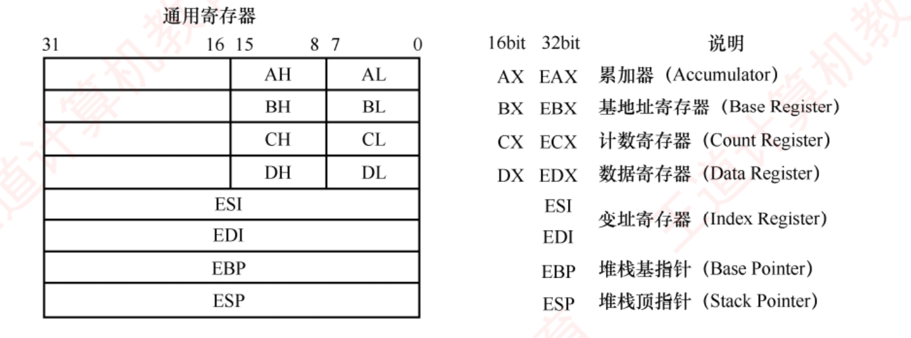
图 4.11 x86 处理器中的主要寄存器及说明 （书 p.172）。左半张图画的是"套娃" ：一个 32 位 EAX，低 16 位可当 AX 用，AX 再拆成 AH/AL 两个 8 位。E = Extended （扩展），标识 32 位寄存器。注意只有 EAX/EBX/ECX/EDX 能这样拆 ，ESI/EDI/EBP/ESP 四个在图里是整条横贯的方格 ，拆不开。
必记结论 · 八个通用寄存器（EBP 和 ESP 必须记死，其余用途灵活 ）
16 位 32 位 说明 可拆 8 位 在真题里干什么 AX EAX 累加器 Accumulator AH / AL 函数返回值固定放这里 ；mul/div 的隐含操作数BX EBX 基地址寄存器 Base Register BH / BL 被调用者保存寄存器 CX ECX 计数寄存器 Count Register CH / CL 移位位数（shr ebx, cl）；循环计数 DX EDX 数据寄存器 Data Register DH / DL 乘法高 32 位、除法余数 ESI ESI 变址寄存器 Index Register — 数组下标（[edx+esi*4]） EDI EDI 变址寄存器 Index Register — 同上 EBP EBP 堆栈基指针 Base Pointer — 指向当前栈帧底部，整个过程执行期间不变 ESP ESP 堆栈顶指针 Stack Pointer — 始终指向栈顶，随入栈/出栈动态变化
⚠️
除 EBP（基址指针）和 ESP（栈指针）外，其余通用寄存器的用途比较灵活。
知识串联 · "EAX 能拆成 AX / AH / AL"，是 ch2「数据的对齐与字长兼容」的活标本
ch2 2.3 那里讲过 x86 里 word 永远是 16 位 （因为 32/64 位都是从 16 位扩展来的）——这就是 AT&T 后缀 w = 2 字节而不是 4 字节的原因 。ch2 「向后兼容」在 ch2 讲的是数据格式 兼容，在这里变成了寄存器名字 兼容：十几年前写的 16 位程序里的 mov ax, ...，在 32 位 CPU 上仍然合法 。本章 4.4 这种"背着历史包袱的兼容"正是 CISC 的典型特征 ——4.4 会说「CISC 的兼容性优于 RISC」，图 4.11 那张套娃图就是证据 。RISC 的寄存器是清一色 32 个 32 位，没有 AH/AL 这种东西。
必记结论 · 操作数标记（题干里会直接用，必须认识）
・
<reg>：任意寄存器。带数字则指定位数——
<reg32>（eax…ebp）、
<reg16>（ax,bx,cx,dx）、
<reg8>（ah,al,…dl）。
・
<mem>：内存地址，如
[eax]、
[var+4]、
dword ptr [eax+ebx]。
・
<con>：8/16/32 位常数。
考点追踪：分析汇编指令对应的二进制代码（2010）
⚠️
x86 指令采用变长编码，操作码通常为 1 字节，但整条指令长度可变。同一指令（如 mov）因操作数类型或寄存器不同，可能对应多种机器码 ：
指令形式 机器码 指令形式 机器码 mov ax, <con16>B8H mov <reg8>/<mem8>, <reg8>8AH mov al, <con8>B0H mov <reg16>/<mem16>, <reg16>8BH mov <reg16>, <reg16>/<mem16>89H
我的补讲 · 「x86 指令变长」这五个字，在真题里是两个采分点 ，不是背景介绍
书上说 ：x86 指令采用变长编码，整条指令长度可变 。潜台词是 ：这句话在综合题里直接换成分数 ，共两处：2017 真题第 1 问 ：「计算机 M 是 RISC 还是 CISC？为什么？」标准答案：M 为 CISC，因为 M 的指令长短不一，不符合 RISC 指令系统的特点。
——判据就是题干那张机器码表里 55（1 字节）、39 4D F4（3 字节）、D1 E2（2 字节）长度不一 。所有算"指令长度"的问题 ：既然变长，就不能靠"指令字长 ÷ 编址单位"去算 ，只能用下面这两条路。所以能考 Z ：看到题干给的是 x86 机器码（一堆两位十六进制），第一反应就该是"这是 CISC、指令变长" ——
而看到题干给的是 32 位定长格式表（2021、2024 真题那种），第一反应是"这是 RISC 风格、指令定长" 。这一句话本身就值 3 分。
必记结论 · 算"指令长度"的两条路，互为验算 （本节三道真题反复用）
路一：相邻两条指令虚拟地址之差 call 占 5 字节 整段 = 0040107FH − 00401020H + 1 = 60H = 96B
路二：数机器码的字节数 C7 84 82 00 20 42 00 0A 00 00 00 ⟹ 数出 11 个字节 ⟹ 下一条地址 = 004010AEH + 11 = 0040 10B9H E8 D6 FF FF FF ⟹ 5 个字节 ，与路一吻合 ✔
⚠️
路一要 +1 （算"占多少字节"是闭区间：末地址 − 首地址 + 1）；
路二不用 +1 （直接数）。
这两处的 ±1 是本节最常见的低级错。
我的补讲 · 习 01/02：手算 add 与 sub 的四个标志位 ，这是本节的入门功，两题必须都做
这两题是
刻意做成的一对 ：同样两个数，一题做加、一题做减，
让你看清 CF 公式里那个 Sub 到底怎么起作用 。
习 01：add ax, bx 习 02：sub bx, ax 目的寄存器 ax （Intel 格式：第一个是目的）bx 运算 FFE8H + 7FE6H FFE8H − 7FE6H＝FFE8H + 取反加一 结果 7FCEH 8002H OF 0 ——两操作数符号不同，加法必不溢出 0 ——两操作数符号位都是 1，结果符号位也是 1，无溢出SF 0 （结果最高位 0）1 （结果为负）CF Cout ⊕ Sub = 1 ⊕ 0 = 1 Cout ⊕ Sub = 1 ⊕ 1 = 0 ZF 0 0 答案 C B
潜台词是 ：
「两个操作数符号不同，加法必不溢出」是最快的 OF 判据 ，比数进位快得多——
因为
异号相加，结果的绝对值一定不超过较大的那个 。
只有同号相加才可能溢出。
所以能考 Z ：书在习 01 的答案后加了一个必背的【注意】框——
「无论是无符号数还是有符号数，都以二进制代码形式无差别地存放在计算机内。即便两个有符号数相加，也会导致 CF 的变动，只是 CF 值对有符号数运算没有意义。」
这句话的意思是：CPU 每次运算都把四个标志全算一遍，"该看哪个"是你 的事，不是 CPU 的事。
🐍 我两题都复算过：
(0xFFE8+0x7FE6)&0xFFFF = 0x7FCE、
(0xFFE8−0x7FE6)&0xFFFF = 0x8002 ✔
我的补讲 · 习 03：机器码题的"小端"怎么落到纸面上——看题干那句括号
题 ：sub ax, imm 的机器码是 2dxxxx（从左到右以字节为单位由低地址到高地址 ），imm = −3、(ax) = 7，求机器码和 OF。答：2DFDFFH，OF = 0 （选 C）。潜台词是 ：题干括号里那句"从左到右 = 由低地址到高地址"才是本题的题眼 ——它把"内存里的字节顺序"和"你写在纸上的顺序"对齐了。于是：FFFDH ；小端 ⟹ 低字节 FDH 放在低地址 ⟹ 写在左边 ⟹ 机器码 = 2D + FD FF 2DFDFFH ；7 − (−3) = 10，没超出 16 位有符号范围 ⟹ OF = 0 。所以能考 Z ：干扰项 2DFFFDH 就是"按人读数的顺序写"（大端）造出来的 。
判端序的动作永远是同一个：把多字节字段按地址从低到高 读出来，看拼出来的是不是原数。
这个动作在 2019 综 02（D6 FF FF FF ⟹ FFFFFFD6H）和 2023 综 04（00 20 42 00 ⟹ 00422000H）里各用了一次，是本章判端序的唯一方法。
常用指令（Intel 格式）
必记结论 · 数据传送指令
mov ：
mov <目的>, <源>，把第二个操作数复制到第一个。
mov eax, ebx #将 ebx 的值复制到 eax
mov byte ptr [var], 5 #将常数 5 存入地址 var 处的 1 字节内存单元
🔥🔥
双操作数指令的两个操作数不能同时为内存 ，即
mov 不能内存→内存 。若要在内存间复制，
先加载到寄存器，再从寄存器写出 。
push ：入栈。
ESP 是栈顶，入栈前先将 ESP 减 4（栈向低地址增长），再把操作数写到 ESP 所指地址。 ⚠️
栈中元素固定为 32 位。
pop ：出栈。
先读出 ESP 所指地址的内容，再将 ESP 加 4。
必记结论 · 算术和逻辑运算指令（标 🔥 的四条是考点 ）
指令 功能 要点 add / sub相加 / 第一个减第二个 结果均存回第一个操作数 inc / dec自增 1 / 自减 1 单操作数 imul 🔥有符号 整数乘法双操作数 imul eax,[var] 或三操作数 imul esi,edi,25；结果必须存入寄存器 mul 🔥无符号 整数乘法仅单操作数 ；被乘数隐含在 eax ，乘积放 edx:eax ；edx ≠ 0 ⟹ 结果放不下 ⟹ 置 CF=1、OF=1 idiv / div 🔥有符号 / 无符号除法 仅指定除数 ；被除数是 edx:eax 组成的 64 位数 ；商→eax，余数→edx and / or / xor按位与/或/异或 and eax,0fH 保留低 4 位；xor edx,edx 是"把 edx 清零"的惯用法not / neg按位取反 / 取负 neg 求的是补码 −x （取反加一），not 只取反shl / shr 🔥逻辑 左移 / 右移第一个操作数是被移位数，第二个是位数（可用 cl）
⚠️⚠️
无符号乘法以 CF 判断溢出，有符号乘法则以 OF 为准 ——书上明写的一句，
易混，做成卡 。
我的补讲 · idiv 那句"被除数是 edx:eax 组成的 64 位数"，是 2025 真题整道大题的题眼
书上说 ：idiv 仅指定除数，被除数为 edx:eax 组成的 64 位有符号数 ，商存 eax、余数存 edx。潜台词是 ：32 位数除以 32 位数，为什么要先凑成 64 位？ 因为除法器的结构就是这样设计的 ——
被除数必须比除数"宽一倍"，才能保证每一步上商都有意义。所以 C 语言里一句 d[i]/x，编译出来必须先做一次符号扩展 。2025 真题（综 07）就是把这句话展开成一整道大题 ：scov R1 这条指令干的就是 {R0,R1} ← SEXT(R1)，
把 32 位的 d[i] 符号扩展成 64 位，高 32 位进 R0、低 32 位进 R1 ；再 idiv R1,R2 才合法。所以能考 Z ：凡看到除法指令前面有一条"看不懂的扩展指令"（scov / cdq / SEXT），它一定在做"凑够双倍字长的被除数"这件事。
这也解释了 2025 第 1 问的答案 ：除法器里 R 装高 32 位（FFFF FFFFH，因为 8765 4321H 是负数）、Q 装低 32 位（8765 4321H）、Y 装除数（0000 00FFH） 。
必记结论 · 控制流指令
x86 用指令指针寄存器 EIP（相当于 PC）指示当前执行指令的地址 ，每条指令执行后 EIP 自动指向下一条。
EIP 不能直接访问，但可通过控制流指令修改。
1) jmp ：无条件转移到 label 处。
考点追踪：无条件转移指令的指令格式（2021）
2) j<condition> ：条件转移，
根据状态标志（ZF、SF 等）决定是否转移 。
考点追踪：条件转移指令与标志位的结合（2013）
指令 含义 指令 含义 je相等时转移（equal） jg大于时转移（greater） jz结果为零时转移（zero） jge大于等于时转移 jne不相等时转移 jl小于时转移（less） jle小于等于时转移 jbe无符号 小于等于时转移（below）
3) cmp / test ：
cmp 执行减法但不保存结果，仅设置标志位；test 执行按位与但不保存结果，仅更新标志位（特别是 ZF） 。二者通常与 j<condition> 配合。
4) call / ret ：🔥🔥
call 将下一条指令的地址（返回地址）压入栈，然后转移到 label；ret 从栈顶弹出返回地址并转移过去。 考点追踪：call 指令的功能（2019）
我的补讲 · j 后面那个字母怎么记：g/l 是有符号，a/b 是无符号
书上说 ：给了 je/jz/jne/jg/jge/jl/jle 七条，另在例子里用了 jbe 却没解释。潜台词是 ：x86 的条件转移分成两套助记符 ，书把它们混在一起给了，容易记乱：有符号用 g reater / l ess ：jg / jge / jl / jle ⟹ 内部查的是 SF、OF、ZF ；无符号用 a bove / b elow ：ja / jae / jb / jbe ⟹ 内部查的是 CF、ZF 。所以能考 Z ：看到汇编里用了 jbe/ja，就知道编译器把这两个数当无符号处理 ——
书上 get_cont 那个例子用 jbe，正是因为比较的是指针 ，而 C 语言规定指针按无符号整数比较 ；
而 nsum_for 例子里 i 和 n 都是 int，所以用 jle/jg 。两个例子是刻意做成的一组对照，书没点破，但考的就是这个。 反过来用 ：题目若问"为什么这里用 jbe 不用 jle"，答案就是「操作数是指针/无符号数」 ；这一条和 4.2 的「有符号看 OF、无符号看 CF」是同一件事的两个层面。
我的补讲 · 习 05：imul 三操作数题的两个坑——算错地址 和写错落点
题 ：R[eax] = 080480B4H，R[ebx] = 00000011H，M[080480F8H] = 000000B0H，执行 imul eax, [eax+ebx*4], -16 后什么变了？答：R[eax] = FFFFF500H （选 C）。两步：算源操作数地址 ：R[eax] + R[ebx]×4 = 080480B4H + 11H×4 = 080480B4H + 44H = 080480F8H （🐍 复算 ✔）；算乘积 ：M[080480F8H] × (−16) = B0H × (−16) = 176 × (−16) = −2816 = FFFFF500H （🐍 复算 ✔）。潜台词是 ：选项 B 和 D 把结果写进了内存单元 M[080480F8H]，这是本题真正的陷阱 ——
书上讲 imul 时明说过「结果存入第一个操作数，必须为寄存器 」 ，所以内存单元的内容不会改变 。所以能考 Z ：这一族题永远问"什么变了 "，而不是"结果是多少" ——
动笔前先圈出"目的操作数是谁"（Intel 格式：第一个），再算数值。
习 01/02 也是同一个考法（习 01 变的是 ax，习 02 变的是 bx ），三道题串起来看，"目的操作数在第一个"这句话就再也忘不掉了 。
我的补讲 · 习 06：条件转移的目标地址，起点是"下一条指令" ——本节最短但最常错的一题
题 ：804846c: 7e 0d jle xxxxxxxx，偏移量 0dH；执行到前一条 cmp 时 i = 105、j = 100（j 在 edx、i 在 eax）。jle 执行后转到哪里？答：804847bH （选 D）。两步：判断跳不跳 ：cmp edx,eax 算的是 edx − eax = 100 − 105 < 0 ⟹ 满足"小于等于"⟹ 转移 ；算目标 ：本条地址 804846cH + 本条长度 2 + 偏移量 0dH = 804847bH 潜台词是 ："本条长度 2"是从机器码 7e 0d 数出来的（两个字节） ——这就是"数机器码字节数"求指令长度那条路的最小实例 。所以能考 Z ：三个错误选项正好是三种漏算 ：
804846eH ＝ 只加了长度没加偏移；8048479H ＝ 只加了偏移没加长度；8048461H ＝ 把偏移当成了负数 。把这条写成一个不变的口诀：目标 = 本条地址 + 本条长度 + 偏移量，其中"本条地址 + 本条长度"就是下一条指令地址 ，也就是取指后的 PC。
这条口诀在 2019、2023 两道真题里各用一次，一字不改。
汇编指令格式：AT&T vs Intel
必记结论 · 六条区别（统考用 Intel 格式 ，但 AT&T 可能出现在题干里）
# AT&T 格式 Intel 格式 ① 指令名必须小写 对大小写不敏感 ② 操作数顺序：「源, 目的」 「目的, 源」 ③ 寄存器前加 %，立即数前加 $ 两者均无前缀 ④ 内存寻址用圆括号 ( ) 用方括号 [ ] ⑤ 复杂寻址 disp(base, index, scale)；8(%edx,%eax,2) ⟹ R[edx] + R[eax]×2 + 8 写作 [edx + eax*2 + 8] ⑥ 助记符后加后缀 表明操作数大小：b=byte、w=word、l=long 内存操作数前 加 byte ptr、word ptr、dword ptr
⚠️ 书上【注意】框：
在 x86 体系结构中，32 或 64 位都是由 16 位扩展来的，因此 word（字）始终表示 16 位。
必记结论 · 表 4.2 两种格式对照（六行，能对着任一列写出另一列）
AT&T 格式 Intel 格式 含义 mov $100, %eaxmov eax, 100100 → R[eax] mov %eax, %ebxmov ebx, eaxR[eax] → R[ebx] mov %eax, (%ebx)mov [ebx], eaxR[eax] → M[R[ebx]] mov %eax, -8(%ebp)mov [ebp-8], eaxR[eax] → M[R[ebp]−8] lea 8(%edx,%eax,2), %eaxlea eax, [edx+eax*2+8]R[edx]+R[eax]×2+8 → R[eax] movl %eax, %ebxmov dword ptr [ebx], eax32 位 R[eax] → M[R[ebx]]
⚠️
mov 传的是内存内容 ，lea 传的是有效地址 本身。我的补讲 · lea 是本节最"不像它自己"的一条指令——它是加法器，不是访存指令
书上说 ：lea 用于将有效地址（而非内存内容） 加载到寄存器；后面在 add 函数的机器码里又说了一句
「这里好像没有加法指令，实际上 lea 指令执行的是加法运算 R[edx]+R[eax] = x + y」 。潜台词是 ：lea 借用了寻址部件的加法器，但把结果直接给你，不去访存。 于是它有了两个身份：名义身份 ：算地址（"取某个数组元素的地址"）；实际身份 ：一条能做「乘 2/4/8 再加常数」的多功能加法指令 ，且不影响标志位 （这是编译器爱用它的原因）。lea eax, [edx+eax*2+8] 一条指令干了：一次乘法（×2）+ 两次加法。所以能考 Z ：书上 add 函数体的核心就一条 lea eax,[edx+eax]，题目若问"这条指令的功能是什么"，答案是"实现 x + y 并把和送入 EAX"，而不是"计算某地址"。
看到 lea 别本能地去想访存——它是本节唯一一条"带方括号却不访存"的指令。
知识串联 · [edx + eax*2 + 8] 这一串，就是 4.2 的变址寻址 穿了件 x86 的衣服
本章 4.2 disp(base, index, scale) 逐项对应：base = 基址寄存器（4.2 的 BR）、index = 变址寄存器（4.2 的 IX）、disp = 形式地址 A、scale = 比例因子 。x86 把基址和变址同时 用上了 ，所以 EA = 基址 + 变址×比例 + 位移 ——这是 4.2 那三种偏移寻址的合体版 。数据结构 这个式子就是二维数组的行主序地址公式 ：a[i][j] 的地址 = 首地址 + i×行宽×元素大小 + j×元素大小。
scale（1/2/4/8）就是"元素占几字节" 。本节真题 2023 综 04 的 [ecx+edx*4+00422000h] 就是它：00422000H = 数组首地址、edx = j、比例 4 = int 的字节数 ，
而 ecx 里装的不是 i，是 i×256 （因为 x86 的 scale 只能取 1/2/4/8，装不下 i×64×4 = i×256，只能先算好）。这是那道题最容易答错的一问。
知识串联 · 「调用者保存 / 被调用者保存」这个约定，在 OS 里叫上下文切换
本章 4.3.4 EAX/ECX/EDX 由调用者保存，EBX/ESI/EDI 由被调用者保存 ——这是软件层面的约定 （编译器遵守，硬件不管）。操作系统 而进程切换时必须保存全部 寄存器 ，因为切换是"随机打断"的，没有任何约定可依赖 ——
这就是"过程调用轻、进程切换重"的根本原因 ：前者只需存 3 个寄存器，后者要存整套现场（通用寄存器 + PC + PSW + 页表基址）。ch5 中断响应介于两者之间：硬件只自动保存断点和 PSW（中断隐指令），其余寄存器由中断服务程序自己压栈 ——相当于硬件版的"调用者保存 + 被调用者保存"分工。 三个场景的差别只在一个问题上：「谁知道待会儿还要用哪些寄存器」 ——
编译器知道（所以能省着存）、OS 不知道（所以全存）、中断硬件只知道最少的那几个（所以剩下的交给软件）。
4.3.2 选择语句的机器级表示
📄 p.176
必记结论 · 条件码是怎么被设置的
条件码描述了最近一次算术或逻辑运算结果的属性 ，常用的有 CF、ZF、SF、OF 。add、sub、imul、or、and、shl、inc、dec、not、sal 等运算指令在执行时会自动 设置条件码 ；cmp 和 test 专门用于设置条件码 ：cmp 相当于 sub、test 相当于 and，但都不保存结果 j<condition> 读取 ZF、OF、SF 实现转移。
必记结论 · if-else 的 goto 等价形式（必默 ，一切分支代码都长这样）
// 原始形式
if(test_expr) then_statement; else else_statement;
// 编译器实际生成的等价 goto 形式
t = test_expr; // 暂存测试结果
if(!t) goto false; // 条件为假 → 跳到假分支
then_statement // 真分支
goto done; // 跳过假分支
false:
else_statement // 假分支
done:
⚠️ 在 C 语言中，
test_expr 的值为 0 表示"假"，非 0（包括负数 ）表示"真" ；两个分支
只会执行其中一个 。
必记结论 · 书上完整例子（p.177）——指针比较用无符号 转移指令
int get_cont(int *p1, int *p2){
if(p1 > p2) return *p2;
else return *p1;
}
已知 p1、p2 的实参已压入调用函数的栈帧，地址分别为
R[ebp]+8、R[ebp]+12 ；
返回值须存放在 eax 中 。
mov eax,dword ptr [ebp+8] #R[eax]←M[R[ebp]+8]，加载参数 p1
mov edx,dword ptr [ebp+12] #R[edx]←M[R[ebp]+12]，加载参数 p2
cmp eax,edx #比较 p1 和 p2，设置条件码
jbe .L1 #若 p1 ≤ p2，转移到 L1
mov eax,dword ptr [edx] #R[eax]←M[R[edx]]，取 *p2 作为返回值
jmp .L2 #无条件转移，跳过 else 分支
.L1:
mov eax,dword ptr [eax] #R[eax]←M[R[eax]]，取 *p1 作为返回值
.L2:
⚠️⚠️
指针比较在 C 语言中按无符号整数处理，故使用 jbe（无符号"小于等于"）。
⚠️ cmp 的两个操作数
都应来自寄存器 ，所以要先把栈里的实参
mov 到 eax/edx。
我的补讲 · 怎么"看汇编认结构" ——if-else 的三个签名特征
书上说 ：书给了 goto 等价形式和一个例子，但没总结"反过来怎么认"。
而考试是反着来的：给你汇编，让你说这是什么结构。
if-else 的三个签名特征（对照习题 09 的四个选项） ：
必有一条条件转移指令 （跳向"另一个分支"）——习 09 选项 B，对
必有一条无条件转移指令 （真分支执行完要跳过假分支）——习 09 选项 A，对
计算条件的代码一定在条件转移指令之前 （先 cmp 才能 j）——习 09 选项 C，对
但第四条是错的 ：
「then 分支的代码一定排在 else 分支之前」——不一定！
书上的
get_cont 例子就是反的：源码里
if(p1>p2) return *p2; 是 then 分支，
可汇编里 jbe .L1 一跳，把 else 分支（*p1）放到了 .L1 里，反而排在后面 ；
then 分支的代码顺序执行、else 分支被跳到 。
编译器可以任意选择"跳走哪一支"，取决于它把条件取反了没有。 （习 09 答案选 D。）
所以能考 Z ：
读汇编时不要假设"上面那段一定是 then" ——
先看条件转移指令的方向和它取的是原条件还是反条件 。
例子里源码是
p1 > p2，汇编用的是
jbe（≤），
正是取反后跳走 。
我的补讲 · 2017 综 01 第 3 问：「0 减 FFFF FFFFH」为什么 CF = 1 ——本章最烧脑的一次标志位计算
题 ：cmp dword ptr [ebp-0Ch], ecx 实现 i 与 n−1 的比较 。执行 f1(0)、i = 0 时，CF 是多少？书上说 ：n = 0 ⟹ n−1 = FFFF FFFFH ；于是做 0000 0000H − FFFF FFFFH，
在补码加/减运算器中即 00000000H + 00000000H + 1 = 00000001H，Cout = 0、Sub = 1 ⟹ CF = 0 ⊕ 1 = 1 。潜台词是 ：书跳过了两处，补上就顺了：为什么 n−1 = FFFF FFFFH ：n 是 unsigned，0 − 1 在无符号里回绕成最大值 。这正是这段 C 代码的 bug 演示 ——for(i=0; i<=n-1; i++) 在 n=0 时会循环 40 多亿次。减法怎么变成加法 ：A − B = A + B 取反 + 1。FFFF FFFFH 取反 = 0000 0000H，再 +1 ⟹ 加数是 00000000H + 1，
整个加法 0 + 0 + 1 = 1，最高位没有进位 ⟹ Cout = 0 。所以能考 Z ：这是本章唯一一处 Cout = 0 的减法 ，也正因如此 CF = 1 （有借位）。
对照习 02（减法但 Cout = 1 ⟹ CF = 0），两题一起看就能把 CF = Cout ⊕ Sub 这个异或彻底吃透：减法时 Cout 和 CF 永远相反 。
4.3.3 循环语句的机器级表示
📄 p.177
考点追踪：循环语句的机器级代码分析（2014、2017、2019、2023）
必记结论 · 三种循环的统一归宿
x86 指令集中没有直接对应 while/for/do-while 的指令 ，编译器用
条件测试（cmp、test）+ 条件转移（je、jne、jg、jle…） 的组合实现。
🔥🔥
大多数编译器会把这三种循环统一转换为类似 do-while 的形式 。
循环 测试位置 循环体至少执行几次 编译后的结构 do-while 后 测试≥ 1 次 循环体 → 尾部 cmp + j? 跳回 while 前 测试可能 0 次 头部先判一次跳出 + 上面那个结构for 前 测试可能 0 次 init → 头部判一次 → 循环体 + update → 尾部跳回
必记结论 · for 循环的完整 goto 展开（必默 ）
// for(init_expr; test_expr; update_expr) body_statement 展开为：
init_expr; // 初始化（只执行一次）
t = test_expr; // 头部先测一次
if(!t) goto done; // 初始条件为假 → 循环体一次都不执行
loop:
body_statement // 循环体
update_expr; // 更新（i++）
t = test_expr; // 尾部再测
if(t) goto loop; // 仍为真 → 跳回
done:
必记结论 · 书上完整例子（p.178–179）——把这段汇编和上面的 goto 模板逐行对齐看
int nsum_for(int n){
int i; int result = 0;
for(i=1; i<=n; i++) result += i;
return result;
}
mov ecx,dword ptr [ebp+8] #R[ecx]←M[R[ebp]+8]，加载参数 n 到 ecx
mov eax,0 #result = 0（result 被优化到 eax）
mov edx,1 #i = 1 （i 被优化到 edx）
cmp edx,ecx #比较 i : n ← 头部测试
jg .L2 #若 i > n，跳出（一次都不执行）
.L1: #循环体入口
add eax,edx #result += i
add edx,1 #i++
cmp edx,ecx #再次比较 i : n ← 尾部测试
jle .L1 #若 i ≤ n，跳回
.L2:
🔥
实参 n 的地址是 R[ebp]+8 ；
编译器把频繁使用的局部变量优化到寄存器 ：
result → eax（同时是返回值寄存器）、i → edx 。
⚠️
i 和 n 都是 int，所以 i ≤ n 是有符号比较，用 jle / jg 这类有符号转移指令。
我的补讲 · 看汇编认循环的两个"钩子" ——一头一尾各一条转移指令
书上说 ：三种循环最终都被编译成 do-while 形式。潜台词是 ：这句话给了你一个识别模板 ——循环在汇编里的样子永远是"两条转移指令夹一段代码" ：头部 一条 cmp + j<反条件> 向下跳到循环出口 （这是 while/for 才有的；do-while 没有这一条）；尾部 一条 cmp + j<原条件> 向上跳回循环入口 （三种循环都有 ）。所以能考 Z ：「向上跳的那条转移指令 = 循环；向下跳的 = 分支或跳出」 ，判据就是偏移量的正负 。2023 真题就靠这一条读题 ：第 2 条 jmp 00401084h（向下 ，偏移 09H，正数）是"跳到头部测试"；
第 7 条 jge 004010bch（向下，偏移 32H）是"跳出循环"。结合源码 for(i=0;i<24;i++) 就能确认这是 for 循环的标准骨架。 循环"一定至少包含一条条件转移指令"（尾部那条），但"不一定包含无条件转移指令" ——
do-while 就没有。选项 D「循环体内执行的指令不包含条件转移指令」是错的 ，尾部那条就在循环体内。
知识串联 · "编译器把局部变量优化到寄存器"，是 4.4「RISC 要配大量通用寄存器」的原因
本章 4.4 RISC 特点第 4 条「CPU 中配备大量通用寄存器」 ——为什么要多？就是为了让编译器能把更多局部变量塞进寄存器 ，
因为 RISC 只有 LOAD/STORE 能访存，变量留在内存里每用一次就要两条指令 。本节 nsum_for 里 result 和 i 整个循环都没碰过内存 ，这才是它快的原因。ch3 寄存器是存储层次的最顶层 （3.1 那张金字塔的塔尖）——"把变量优化到寄存器"就是把最热的数据放到最快的层 ，
和 Cache 装最近用过的块是同一个思想（局部性）的两个层次 。ch5 而寄存器多了也有代价：过程调用时要保存/恢复的寄存器就多 ⟹ 于是有了下面的"调用者保存/被调用者保存"约定。
我的补讲 · 2019 综 02 第 4、5 问：int 溢出与"溢出自陷指令" ——两问其实是一条链
第 4 问 ：f(13) = 6227020800，但 f1(13) 返回 1932053504，为什么？怎么改？
答 ：
6227020800 超出了 32 位 int 的最大值（231 −1 = 2147483647） ，结果
被截断成低 32 位 ；
改法是
把返回值类型改为 double / long long / float / long double 。
第 5 问 ：
imul 的乘法器输出高、低 32 位满足什么条件时 OF = 1？要让 CPU 在溢出时转异常处理，编译器应在 imul 后加什么指令？
答 ：
乘积的高 33 位不全为 0 或不全为 1 时 OF = 1 ；
应加一条"溢出自陷指令" 。
潜台词是 ：这两问连起来才完整——
硬件知道 溢出了（OF 被置 1），但 C 语言不管 它，于是程序若无其事地返回了错值 。
"溢出自陷指令"就是把这条被忽略的信息重新接上：它查 OF，为 1 就调用溢出异常处理程序。
"高 33 位"为什么是 33 不是 32 ：
因为符号位要被算进去 ——32×32 位相乘得 64 位，
若结果能用 32 位补码表示，则高 32 位必须全是低 32 位符号位的复制 ，
算上低 32 位的最高位（符号位本身），就是"高 33 位全 0 或全 1" 。
所以能考 Z ：
这条判据和 ch2 的"补码乘法溢出判断"是同一条 ，
而
"溢出自陷 → 异常处理"这条链在 2025 综 07（除法异常）里又出现一次 ——
两年真题，同一个机制。
知识串联 · 2019 综 02 第 1 问「计算 f(10) 需要调用 f1 多少次」，这是数据结构的递归 混进了组原
数据结构 f1(n) = n × f1(n−1)，递归到 n ≤ 1 停止 ⟹ f1(10), f1(9), …, f1(1) 共 10 次 （包含最外层那次 ，这是最容易差 1 的地方）。本章 每次递归调用压一个栈帧 ：返回地址 4B + 旧 EBP 4B + 参数 4B …… ⟹ 递归深度 × 栈帧大小 = 栈空间消耗 。操作系统 递归太深 ⟹ 栈溢出（stack overflow） ——这就是 OS 里"进程栈段"有大小限制的现实后果。本章 4.3 而第 16 行的 call f1 (00401000) 是"自己调自己" ，从机器码 E8 D6 FF FF FF 能看出偏移量是负数（FFFF FFD6H） ⟹ 往回跳 ⟹ 这就是递归在机器码层面的样子 。一句话：「看到 call 的偏移量为负且目标是本函数入口，就是递归。」
知识串联 · cmp 和 test「只设标志不写回」，在 ch5 的数据通路上是一根断掉的线
本节 cmp = sub 不写回、test = and 不写回 。ch5 数据通路 在硬件上，这意味着执行 cmp 时 ALU 照常算，但"写回寄存器"的控制信号（RegWrite）不置位 ——
ALU 的结果输出端 F 那根线上的值被丢弃，只有 OF/SF/ZF/CF 四根标志线被锁存进标志寄存器 。
对照上面 2024 综 05 那张数据通路图：F 和四个标志是从 ALU 引出的两组不同的线，cmp 就是"只要右边这组"。 本章 4.2 这也解释了为什么"比较"能用"减法"实现却不破坏操作数 ——4.2 习 25 说的"bgt 会将 A 和 B 相减"，减的结果根本没存下来。 记一句：「cmp 是一次被丢弃结果 的减法，它唯一的产物是四个标志位。」
4.3.4 过程调用的机器级表示 ⭐ 本节难点，也是全章综合题的地基
📄 p.179
必记结论 · 调用过程的六步（P = 调用者，Q = 被调用者；习 12 就考这个顺序 ）
P 将入口参数（实参）放到 Q 能访问的位置
P 执行 call 指令，将返回地址（call 的下一条指令地址）压入栈 ，并转移到 Q
Q 建立自己的栈帧 ，为局部变量分配空间，必要时保存某些寄存器
Q 执行其主体代码
Q 将返回结果放到约定位置，释放局部变量空间，恢复之前保存的寄存器
Q 执行 ret 指令，从栈顶弹出返回地址 ，转移回 P
⟹ 记成
②③①⑥⑤④ （习 12 的选项编号）：
传参 → 存返回地址并转移 → 保存现场 → 执行函数体 → 恢复现场 → 返回 。
必记结论 · 寄存器保存约定（谁保存 是关键）
类别 寄存器 谁负责保存 调用者保存寄存器 EAX、ECX、EDX 若 P 希望调用后仍用这些值，P 必须在调用前自行压栈保存 ，返回后恢复 被调用者保存寄存器 EBX、ESI、EDI 若 Q 要用这些寄存器，Q 必须在使用前保存到栈中 ，返回前恢复
为什么要有这个约定 ：寄存器数量有限，调用双方共享，
若不加保护直接覆盖将导致程序出错 。
必记结论 · 栈帧（stack frame）的三条
・每个过程执行时在运行时栈 中分配一块专属区域，称为栈帧 ；整个运行时栈由多个连续的栈帧组成 。EBP（基址指针）指向当前栈帧的基址 （保存旧 EBP 的位置），ESP（栈指针）始终指向当前栈顶 。栈从高地址向低地址增长 ；过程执行时 ESP 随入栈/出栈动态变化，而 EBP 在当前过程执行期间保持不变 ，便于通过固定偏移访问参数和局部变量 。
我的补讲 · 整个 4.3 的地基就是下面这张"尺子" ——记住它，一切机器级代码题都能读
书上说 ：参数在
R[ebp]+8、
R[ebp]+12；局部变量在
R[ebp]-4、
R[ebp]-8、
R[ebp]-12。
潜台词是 ：书是在两个例子里
分别 提到这些偏移的，
没有把它们拼成一张完整的尺子 。拼起来是这样：
高地址 ↑ … [ebp+12] 第 2 个参数 参数区，从右往左压 [ebp+8] 第 1 个参数 参数从 +8 起 [ebp+4] 返回地址 call 压入，4 字节 [ebp] 旧 EBP push ebp 压入，4 字节 ← EBP 指这里 [ebp−4] 第 1 个局部变量 局部变量区 [ebp−8] 第 2 个局部变量 低地址 ↓ … ← ESP 指栈顶
「参数为什么从 +8 开始而不是 +4？」——因为中间隔着两个 4 字节的台阶 ：返回地址（call 压的）和旧 EBP（push ebp 压的）。
这一句是本节最值钱的一句，答对了这一节的题就都能读。
所以能考 Z ：
看到 [ebp+正数] 就知道在读参数，看到 [ebp-正数] 就知道在读写局部变量，看到 [esp+…] 就知道在为下一次调用 准备参数。
书上 caller 那段汇编的每一行都能用这三句话读完。
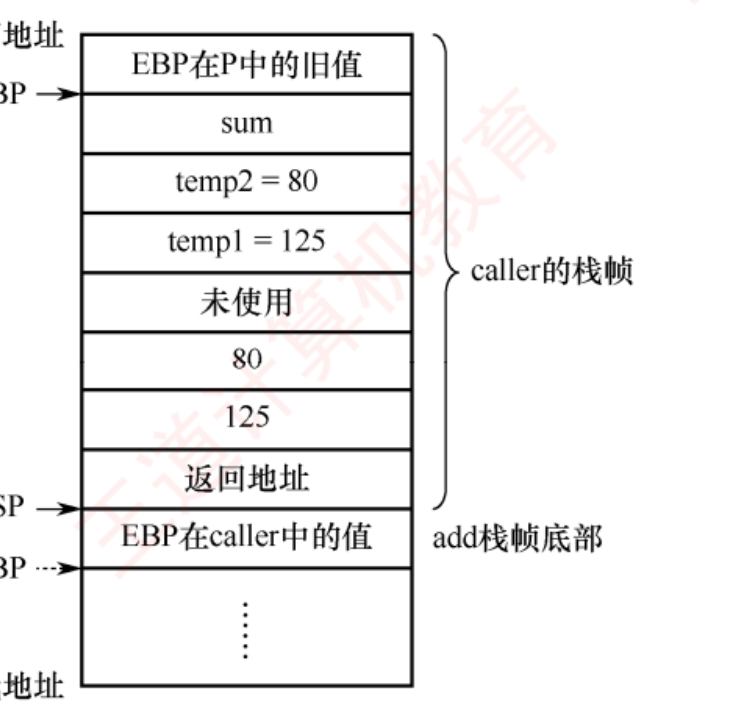
图 4.12 caller 和 add 的栈帧 （书 p.180）——本章最该看熟的一张图，4.3 全部综合题的地基 。从上往下（高地址→低地址）：EBP 在 P 中的旧值（EBP 指这里）→ sum → temp2 → temp1 → 未使用（4 字节对齐填充） → 80 → 125 → 返回地址（ESP 指这里）→ EBP 在 caller 中的值 。看图三个要点 ：① 参数区在栈帧的最低端 （80 在上、125 在下 ⟹ 左参数 125 在低地址 ）；② "未使用"那一格就是 16 字节对齐填出来的 ；③ ESP 之下就已经是 add 的栈帧了 ——两个栈帧是紧挨着的。
必记结论 · 书上完整例子 caller 的汇编（p.180，逐行读一遍）
int add(int x, int y){ return x+y; }
int caller(){
int temp1=125; int temp2=80;
int sum=add(temp1,temp2);
return sum;
}
caller:
push ebp #保存调用者 P 的 EBP
mov ebp,esp #建立新栈帧：EBP←当前栈顶
sub esp,24 #为局部变量和参数区分配 24 字节空间
mov [ebp-12],125 #temp1 = 125
mov [ebp-8],80 #temp2 = 80
mov eax,dword ptr [ebp-8] #加载 temp2
mov [esp+4],eax #将 temp2 放入参数区【高】地址
mov eax,dword ptr [ebp-12] #加载 temp1
mov [esp],eax #将 temp1 放入参数区【低】地址 ← 见下方红块
call add #调用 add，返回值保存于 eax
mov [ebp-4],eax #将返回值存入 sum
mov eax,dword ptr [ebp-4] #将 sum 作为返回值
leave #等价于 mov esp,ebp 和 pop ebp
ret #弹出返回地址并跳回
书上对 caller 栈帧的四条分析 ：
・caller
仅使用了 EAX（调用者保存寄存器），没用任何被调用者保存寄存器 ⟹ 除
push ebp 外无须保存其他寄存器；
・三个局部变量 temp1、temp2、sum 都分配在栈中，
占 12 字节 ；
・call 之前
依次将入口参数 temp2 和 temp1 的值（80 和 125）保存到栈中 （
左参数位于较低地址，右参数位于较高地址 ），
占 8 字节 ；
・执行 call 时再把
返回地址 压入栈，
占 4 字节 。
陷阱 · 🔍 我在这里抓出书上一处自相矛盾 （p.180 汇编注释 vs 同页正文）
书上 caller 汇编第 9 行的注释 写的是：mov [esp],eax #……将 temp1 放入参数区高 地址 。这里应为「低地址」 ，三条证据：同一页正文自己写的是 ：「（左参数位于较低地址，右参数位于较高地址 ）」——temp1 是左参数；[esp] 显然低于 [esp+4]mov [esp+4],eax 放的是 temp2（右参数），注释写的是"高地址"，两行注释撞车了 ；图 4.12 里 125 画在 80 的下面（更低地址） ，与"temp1 在低地址"一致。结论：书上这条注释印错了一个字。 练习系统里这道题我已 verdict:'warn' 双写。这个坑值得记 ：凡是「谁在高地址、谁在低地址」的题，别信注释，去看图或去看 [esp] 与 [esp+4] 的大小关系。
必记结论 · 🔥🔥 栈帧大小的计算 （真题最爱，28 → 32 那一步是考点）
栈帧大小 = 旧 EBP(4) + 局部变量 + 参数区 + 返回地址(4)，再向上取整到 16 的倍数 4（旧 EBP）+ 12（temp1/temp2/sum）+ 8（参数区 80 和 125）+ 4（返回地址）= 28 字节 ；但 GCC 为保证数据严格对齐，规定每个函数的栈帧大小必须是 16 字节的倍数 ⟹ 最终分配 32 字节 ，多出的 4 字节作为对齐填充（图 4.12 里那格"未使用"） 。
必记结论 · leave 指令
在 ret 之前必须
释放当前栈帧并恢复调用者的基址指针 ，
leave 就干这件事 ，等价于两条指令：
mov esp, ebp #将 ESP 设置为当前 EBP 的值，即指向保存旧 EBP 的位置
pop ebp #从栈中弹出旧 EBP，恢复过程 P 的基址指针
执行完后
EBP 已恢复为 P 中的原始值，ESP 指向栈顶的返回地址 ，此时
ret 便可从 ESP 所指位置取出返回地址并转移回 P 。
（编译器也可以不用 leave，而用显式 pop 配合调整 ESP 来回收栈帧。）
必记结论 · add 过程的机器代码（书 p.181）——三段式 + 指令长度验算
8048469: 55 push ebp ┐ 准备阶段
804846a: 89 e5 mov ebp,esp ┘
804846c: 8b 45 0c mov eax,dword ptr [ebp+12] ┐
804846f: 8b 55 08 mov edx,dword ptr [ebp+8] ├ 过程体
8048472: 8d 04 02 lea eax,[edx+eax] ┘
8048475: 5d pop ebp ┐ 结束阶段
8048476: c3 ret ┘
阶段 行 做什么 准备阶段 1、2 push ebp 保存 caller 的 EBP，mov ebp,esp 使 EBP 指向当前栈帧基址 。此时入口参数 x、y（125 和 80 ）分别在 R[ebp]+8、R[ebp]+12 过程体 3、4、5 把 y（[ebp+12]）加载到 EAX 、x（[ebp+8]）加载到 EDX ；lea 计算 edx+eax 存回 EAX 作为返回值这里"没有加法指令"，加法是 lea 做的 结束阶段 6、7 pop ebp 恢复 caller 的 EBP；ret 从栈顶弹出返回地址 ，转回 caller 中 call add 之后那条 mov [ebp-4],eax
🐍
指令长度复算（相邻地址之差 vs 数机器码字节数，两法吻合） ：
1, 2, 3, 3, 3, 1 ✔ ——
这就是"x86 指令变长"的实物证据 。
🔥
为什么 add 的栈帧极简 ：它
没有局部变量、没用任何被调用者保存寄存器、也不再调用其他过程 ，
仅需保存 EBP 以维持调用链的完整性 。
知识串联 · 运行时栈这一套，在四门课里各有一个名字
数据结构 运行时栈就是"栈"这个 ADT 的最著名应用 ：递归的每一层压一个栈帧。2019 真题（求阶乘 f1）就是一道"递归 + 机器码"的合体题 ——问"计算 f(10) 需要调用 f1 多少次"（答 10 次 ），这是数据结构的问法；问"call 指令偏移量是多少"，这是本章的问法。操作系统 栈帧的保存/恢复 ＝ 中断与异常的现场保护 ，区别只有三点：中断是硬件 压栈、压的是内核栈 、还要多压一个 PSW 。"为什么要保存返回地址"这个问题，两门课的答案一字不差。 操作系统 栈从高地址向低地址增长 ，而堆从低地址向高地址增长 ——两者相向而行，中间是空闲区。这就是 OS 内存管理里进程地址空间那张图。 ch5 call/ret 在 ch5 会被拆成微操作序列（取指 → 算目标地址 → PC 入栈 → 目标地址送 PC ），与中断隐指令的微操作高度相似 。这一块是 408 里"一处学会、四处得分"的典型，值得比别处多花一小时。
我的补讲 · 习 11：为什么"返回地址只能由调用指令自己算" ——一句反证就说清了
书上说 （习 11 答案）：返回地址只能由调用指令来计算并保存，因为执行调用指令后就转移到了被调用过程，因此无法获取返回地址。 潜台词是 ：这是一句反证 ——如果不在 call 那一刻算，下一刻 PC 已经跳到 Q 了，"P 的下一条指令地址"这个信息就永久丢失了 。所以硬件必须在转移的同一拍把它存下来。 嵌套调用必须压栈 ：若只存在一个固定寄存器里，第二层调用会把第一层的返回地址覆盖掉 ；栈天然支持"后进先出"的嵌套 。选项 D 是错的 ：「转移目标地址无须在指令中明显给出」——错，被调用过程的第一条指令地址一定 要在 call 指令里给出 （否则跳去哪儿？）。"无须给出"的是返回 地址（ret 从栈里拿），不是目标 地址。 所以能考 Z ：call 指令里明写的是"去哪儿"，栈里存的是"从哪儿来"——两个方向别搞反。
我的补讲 · 2023 综 04 第 4 问：缺页问题为什么答"不会" ——判据只有一句话
题 ：第一次执行第 19 条指令时，取指令 过程中是否会发生缺页异常？为什么？答：不会。 因为第 19 条指令所在的整段程序都在页号为 00401H 的同一个页面中 ，
而执行到第 19 条之前，前面 18 条指令早已被取过 ，该页必然已在主存 ，所以取指不会缺页。潜台词是 ：这一问的解法就一个动作——把两个虚拟地址的高 20 位对一下 （页大小 4KB ⟹ 低 12 位是页内偏移，高 20 位是页号 ）：00401072H → 页号 00401H ；第 19 条 004010AEH → 页号 00401H ⟹ 同页 。2019 综 03 第 1 问是完全一样的动作 ：push 在 00401000H、ret 在 0040104AH，高 20 位都是 00401H ⟹ 同页 。所以能考 Z ：「是否同页」＝「高 (32 − log₂页大小) 位是否相同」，一秒可判。
⚠️ 但要看清题问的是"取指令 "还是"取数据 " ——本题问取指令（不会缺页）；
若问的是访问 a[i][j] 这个数据，答案就可能不同了 （数组 a 首地址 00422000H，与代码不在同一页，且 24×64×4 = 6KB > 4KB，数组本身就跨页 ）。
我的补讲 · 2024 综 06 第 2 问：一道题连做四件事 ，是全章"三章合一"的样板
题 ：i = 5、r1（sum）= 0000 1332H、r3（数组首地址）= 0013 DFF0H，给一张内存字节表，求 a[i] 的地址、a[i] 与 sum 的机器数、a[i] 所在页号、数组至少存放在几页。
算地址 （本章）：a[5] 地址 = 0013DFF0H + 5×4 = 0013E004H （🐍 ✔）
小端读表 （
ch2 ）：0013E004~E007 四个字节是
DC EC FF FF，
小端 ⟹ 低地址是低字节 ⟹
a[5] = FFFF ECDCH 补码加法 （ch2）：sum = 00001332H + FFFFECDCH = 0000000EH （32 位回绕；FFFFECDCH 是负数 −4900，1332H = 4914，4914 − 4900 = 14 = 0EH ✔）
算页号与跨页 （
ch3 ）：页大小 4KB ⟹ 页号 = 高 20 位 ⟹
0013E004H >> 12 = 0013EH ；
表中数据横跨
0013DH 与 0013EH 两个页号 ⟹
数组 a 至少存放在 2 页中
所以能考 Z ：
第 3 步那个"负数相加"最容易慌 ——不用换算成十进制，
直接按 32 位十六进制加、进位丢掉即可 。
第 4 步"至少几页"的判据是"表里出现了几个不同的高 20 位" ，
不是"数组多大 ÷ 页大小" （那样算会漏掉"数组没有页对齐"这件事）。
本节真题实战：两道 RISC 风格大题（2024 与 2025）
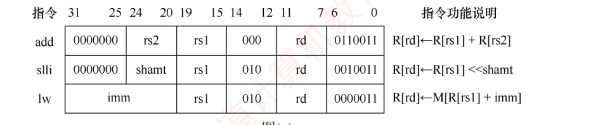
补图（书 p.185 综 05 图 (a)） 2024 统考真题：add / slli / lw 的指令格式 。三条指令共用同一套字段划分 ：31–25 | 24–20 | 19–15 | 14–12 | 11–7 | 6–0。看这张表只需盯三件事 ：① rs1/rs2/rd 都是 5 位 ⟹ 最多 32 个通用寄存器 ；② lw 把高 12 位整块当 imm （所以没有 rs2）；③ 最低 7 位（6–0）是操作码 ，三条各不相同——这就是第 5 问"凭什么断定它是 lw"的依据 。
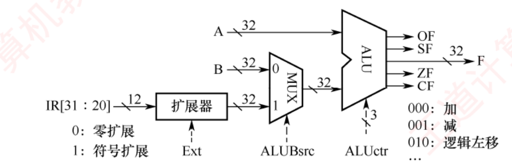
补图（书 p.185 综 05 图 (b)） 2024 统考真题：部分数据通路与控制信号 。信号只有三个，各管一件事 ：Ext 控制扩展器（0 = 零扩展，1 = 符号扩展）、ALUBsrc 控制 MUX 选 B 还是选扩展结果（0 = 选寄存器 B，1 = 选立即数 ）、ALUctr 三位选运算（000 加 / 001 减 / 010 逻辑左移）。ALU 右侧引出的 OF/SF/ZF/CF 四根线，就是 4.2 那四个标志位的物理出处 ——ch5 数据通路 会把这张图铺满整页。
我的补讲 · 2024 综 05 第 2 问：手算 OF 和 CF ，这是全章唯一一处要你真的去看进位
书上说 ：8765 4321H + 9876 5432H = 1FDB 9753H，
次高位向最高位的进位为 0，最高位产生的进位为 1，因此 OF = 0 ⊕ 1 = 1 ；
add 做加法 Sub = 0，因此 CF = 0 ⊕ 1 = 1 。
潜台词是 ：书直接报了两个进位值，
没说怎么看出来的 。方法是
把最高位单独拆出来算 ：
去掉最高位，只加低 31 位 ：0765 4321H + 1876 5432H = 1FDB 9753H。这个结果 < 231 ⟹ 低 31 位没有向最高位进位 ⟹ 次高位进位 = 0
再看最高位 ：两个数最高位都是 1 （8H 和 9H 的最高位），1 + 1 + 0（来自低位的进位）= 10 ⟹ 最高位产生进位 = 1，本位 = 0 （与结果 1FDB9753H 的最高位 0 吻合 ✔）
套公式 ：OF = 次高位进位 ⊕ 最高位进位 = 0 ⊕ 1 = 1 ；CF = Cout ⊕ Sub = 1 ⊕ 0 = 1
🐍 我复算过：
(0x87654321 + 0x98765432) & 0xFFFFFFFF = 0x1FDB9753，低 31 位和
= 0x1FDB9753 < 2³¹ ✔
所以能考 Z ：
第 3 小问「若处理的是无符号整数，应根据哪个标志位判断溢出」——答 CF 。
本题两个标志都等于 1，纯属巧合；真正的考点是"该看哪一个"，而不是"值是多少"。 （有符号看 OF、无符号看 CF——
4.2 那张卡在这里第三次用上 。）
我的补讲 · 2024 综 05 第 5 问的解法可以固化成三步，是"看机器码认指令"的标准流程
题 ：机器码 A040 A103H，为什么一定是 lw？若 R[01H] = FFFF A2D0H，读取的存储地址是什么？
拆成二进制，先看操作码字段 ：A040A103H = 1010 0000 0100 0000 1010 0001 0000 0011B。
IR[6:0] = 0000011 、IR[14:12] = 010 ⟹ 对照图 (a)，只有 lw 是这个组合 （add 是 0110011/000，slli 是 0010011/010）
取出 imm 并符号扩展 ：IR[31:20] = A04H ，最高位是 1（负数）⟹ 符号扩展成 32 位 = FFFF FA04H
算有效地址 ：R[rs1] + imm = FFFF A2D0H + FFFF FA04H = FFFF 9CD4H （32 位回绕）
🐍 复算：
0xA040A103 & 0x7F = 0x03 ✔；(0xA040A103 >> 12) & 7 = 2 ✔；0xA040A103 >> 20 = 0xA04；(0xFFFFA2D0 + 0xFFFFFA04) & 0xFFFFFFFF = 0xFFFF9CD4 ✔
所以能考 Z ：
这三步（切操作码 → 取立即数并扩展 → 算地址）就是 RISC 风格题的通用解法 ，
2021 综 05、2024 综 05/06 三道题的解法逐字相同 ，只是字段位置不同。
做熟一道，三道都会。
我的补讲 · 2024 综 06 第 3 问：把汇编"编码回"机器码 ，这是唯一一道反向题
题 ：指令 slli r4, r2, 2 的机器码是什么？解法就是照着图 (a) 的格式表填空 ：slli 的格式是 0000000 | shamt | rs1 | 010 | rd | 0010011，shamt = 2 = 00010、rs1 = r2 = 00010、rd = r4 = 00100 ：0000000 00010 00010 010 00100 0010011 ⟹ 四位一组重排 ⟹ 0021 2213H （🐍 复算 ✔）所以能考 Z ：第二小问「若数组 a 改为 short 类型，slli 应写成什么」——答 slli r4, r2, 1 。
理由：比例因子 = 元素字节数 ，int 是 4 字节所以左移 2 位（×4），short 是 2 字节所以左移 1 位（×2） 。
这一条和 4.2 变址寻址、和 x86 的 [edx+esi*4] 是同一条规则的第三次出现。
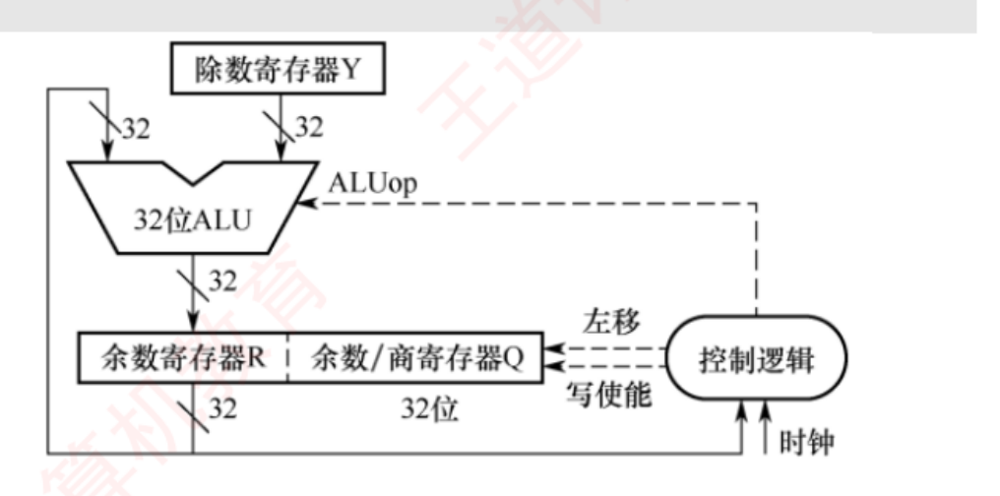
补图（书 p.186 综 07 图 (b)） 2025 统考真题：补码除法器逻辑结构 （⚠️ 书上题面误印为「09」，见下方红块）。四个部件各管一件事 ：Y 装除数、{R, Q} 合起来装被除数（R 高 32 位、Q 低 32 位 ，算完 R 留余数、Q 留商 ）、32 位 ALU 由 ALUop 控制做加或减 、控制逻辑 受时钟驱动，管"左移"和"写使能"——而它里面就装着那个计数器 （因为补码除法要迭代固定次数）。这张图是 ch2 除法运算 的硬件版。
陷阱 · 🔍 第二处书误（排版） ：4.3.5 综合题题号从 06 直接跳到 09
书 p.186 的这道 2025 真题，题面印的是「09.【2025 统考真题】」 ，但 4.3.6 答案区里它的编号是「07」 ——中间的 07、08 两题根本不存在 。dpi=340 复核过 ，确认题面印的确实是「09」，不是我看错 。结论：题面题号排版错误，应为 07。 练习系统里我按 07 统一编号，避免你对答案时找不到。第 2 处书上问题 （第 1 处是上面 p.180 的"高/低地址"注释矛盾）。
我的补讲 · 2025 综 07 第 2 问：除法异常只有两种情况 ，别漏第二种
书上说 ：x 为 0000 0000H 时发生
除数为零异常 ；d[i] 为 8000 0000H 且 x 为 FFFF FFFFH 时发生
除运算溢出异常 。
潜台词是 ：第一种谁都想得到，
第二种是"最小负数除以 −1" ，为什么会溢出？
因为
32 位补码的范围是 −231 ～ 231 −1，不对称 （
ch2 讲过）：
−231 ÷ (−1) = +231 ，
而 +231 超出了正数最大值 231 −1 ，
装不下 ⟹ 溢出 。
所以能考 Z ：
「补码正负范围不对称」这一条在 408 里会兑现三次 ——
① ch2 求
|−231 | 时溢出；②
本题的除法溢出 ；③
neg 指令对最小负数取负时溢出。
都是同一个根。
第 2 问后半段问「异常响应过程中 CPU 要做什么」，标准答案三步：
保存断点和程序状态（到内核栈或特定寄存器）→ 关中断 → 转移到内核中的异常处理程序 。
这三步在 ch5 和《操作系统》里会各讲一遍，措辞完全一样。
知识串联 · 2019 综 03 是全章最"跨章"的一问 ——它把 ch3 的 Cache 与 VIPT 搬进了 ch4
题干：主存地址 32 位，页大小 4KB；指令 Cache 有 64 行、
4 路组相联 、块大小 64B。问地址怎么划分、call 指令会在哪一组命中。
ch3 3.5 Cache 地址划分 ：64 行 ÷ 4 路 =
16 组 ⟹ 组号 4 位 ；块大小 64B ⟹
块内地址 6 位 ；
标记 = 32 − 4 − 6 = 22 位 。
ch3 3.6 页大小 4KB ⟹ 虚拟地址与物理地址的低 12 位完全相同 （页内偏移不参与地址转换）。
合起来 = VIPT 组号 4 位 + 块内 6 位 = 10 位 ≤ 12 位页内偏移 ⟹
组号可以直接从虚拟 地址取，不用等地址转换完成 。
于是 call 指令虚拟地址 00401025H 的低 12 位
025H = 0000 0010 0101B ⟹ 块内 = 低 6 位
100101，
组号 = 第 6~9 位 = 0000 = 第 0 组 。（🐍 复算 ✔）
⟹
这一问告诉你一件事：4.3 的综合题经常有一半分数不在第 4 章 。
2023 真题第 4 问问缺页（ch3 虚存）、2024 综 06 第 2 问问页号与"数组至少存放在几页"（ch3 虚存）——都是同一个套路。
复习 4.3 时请把 ch3 精读版 放在手边。
背景 · 考试不碰：书上建议"结合 GDB 调试查看汇编"
书在 4.3.1 末尾建议：在学习 C 语言程序时，结合调试工具（如 GDB）查看其对应的汇编代码，以加深理解。
这是一条学习建议，不是考点 ——考场上不会让你写汇编，只会让你读。如果时间紧，跳过这一步没有任何损失 ；
真要动手，把书上的 caller/add 两段例子在纸上按图 4.12 画一遍栈帧，比开 GDB 有效率得多 。
我的补讲 · 4.3 收官：这一节考完后手里应该剩下的六条
19 页、19 道题、7 道综合真题（
合计约 105 分 ），会重复出现的只有六条：
栈帧尺子 ：[ebp+8] 起是参数、[ebp+4] 返回地址、[ebp] 旧 EBP、[ebp−4] 起是局部变量；栈帧大小向上取到 16 的倍数
指令长度两求法 （相邻地址之差 / 数机器码字节数）互为验算 ；相对寻址偏移量 = 目标地址 − 下一条 指令地址
判端序 ：把机器码里的多字节字段按字节读出来。D6 FF FF FF ⟹ FFFFFFD6H ⟹ 小端
数组地址 = 首地址 + i×行宽×元素大小 + j×元素大小；比例因子 = 元素字节数 ；x86 比例因子只能取 1/2/4/8，装不下就先算好放寄存器
标志位 ：CF = Cout ⊕ Sub、OF = 次高位进位 ⊕ 最高位进位；有符号看 OF、无符号看 CF
lea 是加法不是访存 ；cmp = sub 不写回、test = and 不写回 ；三种循环都编译成 do-while 形状
所以能考 Z ：
这六条覆盖了 2017–2025 全部七道综合真题的骨架。
剩下的分数在 ch2（补码、溢出、浮点）和 ch3（Cache 划分、页号、缺页）那边，
本节的题几乎都是"三章合一"的。
4.4 CISC 和 RISC 的基本概念
📄 p.190
指令系统朝着两个截然不同的方向发展 ：一是通过增强原有指令功能、引入更复杂的指令，将部分软件功能固化到硬件中 ，这类机器称为复杂指令系统计算机（CISC） ，典型代表是采用 x86 架构 的处理器；二是通过精简指令集、简化指令功能，以提升指令执行效率 ，这类机器称为精简指令系统计算机（RISC） ，典型代表是 ARM、MIPS 等架构。
知识串联 · CISC 的「多数指令均可直接访问内存」，正是 4.1 那张访存次数表 的来源
本章 4.1.2 「二地址指令若地址码均为主存地址，需 4 次 访存」——这种指令只有 CISC 才有 。
RISC 里根本不存在"两个操作数都在内存"的运算指令 ，所以它的运算指令访存次数永远是 1（只有取指那一次） 。本章 4.2 表 4.1 同理，间接寻址那个"2 次访存"在 RISC 里也不存在 ——RISC 连间接寻址都没有。ch1 于是 CISC 的 CPI 天然就高 ：一条指令访存 4 次，光访存就要 4 个存储周期 。
这解释了表 4.3 的「各种指令执行时间相差较大」与「大多数指令需多个时钟周期」两行其实是同一个原因 。ch5 也解释了为什么 CISC 只能用微程序控制 ：一条指令要拆成十几个微操作，用组合逻辑硬连线画不出来。 「谁能访存」这一条，往下一路决定了访存次数、CPI、控制方式、能否流水——4.4 表里那十行有五行是它派生的。
4.4.1 复杂指令系统计算机（CISC）
考点追踪：CISC 的特点（2017）
必记结论 · CISC 的七条特点
① 指令系统庞大复杂，指令数量通常超过 200 条 ；指令长度不固定，指令格式和寻址方式种类繁多 ；多数指令均可直接访问内存 ；使用频率差异显著 ；指令执行时间相差较大，大多数指令需多个时钟周期才能完成 ；控制器多采用微程序控制 ，部分复杂指令难以用硬连线逻辑实现；难以通过优化编译生成高效的目标代码 。
必记结论 · RISC 诞生的那条统计数据（书上原文，必记）
对传统 CISC 指令系统的统计分析表明：各种指令的使用频率相差悬殊，约 80% 的程序执行仅依赖于 20% 的简单指令，而其余 80% 的复杂指令使用频率极低。 仅保留高频使用的简单指令，并通过它们组合实现不常用的复杂指令功能 ，由此催生了 RISC 架构。
我的补讲 · 那条 80/20 统计 不是背景故事，它是 RISC 全部设计决策的唯一论据
书上说 ：约 80% 的程序执行仅依赖于 20% 的简单指令，而其余 80% 的复杂指令使用频率极低。 潜台词是 ：这一句话可以推出 RISC 的每一条特点 ，考简答题时它就是"为什么"的标准开头：砍掉它们，只留高频的 （特点 ①，指令 < 100 条）；它们的长度和格式自然能统一 （特点 ②，定长）；硬布线就能译，不必用微程序 （特点 ⑥）⟹ 省下的 40% 芯片面积去放寄存器 （特点 ④）；拼得好不好全看编译器 （特点 ⑦）。所以能考 Z ：4.4 唯一可能出的大题就是"简述 RISC 的设计思想及其依据" ，
标准答法就是"先摆 80/20 这条统计，再顺着上面这条链说下来" ——每一步都是采分点，而且不会背串。 这条统计说的是"执行频率"不是"指令条数" ：CISC 里那 80% 的复杂指令数量上确实占多数，但运行时几乎不被执行 。把主语说反了会失分。
4.4.2 精简指令系统计算机（RISC）
考点追踪：RISC 的特点（2009、2025）
必记结论 · RISC 的七条特点（与 CISC 逐条对着背）
① 仅选取使用频率最高的简单指令 ，复杂功能由多条简单指令组合实现；指令长度固定，指令格式和寻址方式种类较少 ；仅 LOAD/STORE 指令可访问内存 ，其余运算均在寄存器之间进行；CPU 中配备大量通用寄存器 ；普遍采用指令流水线技术，绝大多数指令在一个时钟周期内完成 ；以硬布线控制为主 ，极少或完全不使用微程序控制；高度依赖编译器优化 ，以缩短程序执行时间。核心思想一句话 ：简化指令系统，强调「寄存器-寄存器」操作，力求指令格式统一。
陷阱 · 本节两条最反直觉的结论，五道题里四道在考它们
① CISC 的兼容性优于 RISC。 ——很多人本能觉得"新的、先进的 RISC 应该更好"，错。 CISC 架构通常支持向后兼容，即新机型包含旧机型的全部指令并加以扩展；而 RISC 由于大幅简化指令集、改变指令格式，通常无法与老机型兼容。
（习 01 选项 C「RISC 机的兼容性优于 CISC 机」是错 的；习 03 选项 A「新设计的 RISC 是从 CISC 指令系统中挑一部分以实现兼容」也是错 的——RISC 挑简单指令不是为了兼容，也不可能兼容 CISC 。）② 流水线不是 RISC 的专利。 ——表 4.3 最后一行写得很精确：RISC「必须实现」流水线，CISC「可以通过一定方式实现」 。对 ，B「采用流水技术的机器一定是 RISC 机」错 ；
而 2025 真题（习 06）的 C 选项「难以采用流水线数据通路实现微架构」正是反的——RISC 恰恰最适合流水线。
我的补讲 · 「CISC 兼容性更好」这件事，其实是商业史 而不是技术优劣
书上说 ：x86 架构凭借庞大的软件生态占据主流地位，早期大量软件均基于 CISC 设计，纯 RISC 系统难以满足兼容性需求 ；且现代 CISC 处理器已在内部融合了大量 RISC 思想 。潜台词是 ："兼容性"在这里不是一个技术指标，是一个历史包袱。
CISC 兼容性好，不是因为它设计得更周到，而是因为它必须一直背着旧指令不敢删 ——
图 4.11 那张 EAX/AX/AH/AL 套娃图就是包袱的实物 。反过来，RISC 兼容性差也不是缺点，是它主动砍掉包袱换来的：定长、格式少、只有 LOAD/STORE 访存。 所以能考 Z ：凡是问"哪个更好"的选项都要警惕，本节的正确答案往往是"各有代价" 。
而「现代 CISC 内部融合了 RISC 思想」 这句也是考点素材——现代 x86 在译码阶段把复杂指令拆成"微操作（μop）"再流水执行，
这就是为什么 CISC 也能流水线 ，正好解释了表 4.3 最后一行的"可以通过一定方式实现"。
知识串联 · 2024 与 2021 两道真题用的就是 RISC 指令集 ——4.4 的每条特征都能在题干里指出来
2024 综 05 题干说「32 位定长指令字 」⟹ 特点 ②（定长） ；三条指令 add / slli / lw ⟹ 特点 ③（只有 LOAD/STORE 访存，lw = load word） ；
rs1/rs2/rd 各 5 位 ⟹ 32 个通用寄存器 ⟹ 特点 ④（寄存器多） ；R[rd] ← R[rs1] + R[rs2] ⟹ 三地址、寄存器-寄存器运算 ⟹ 核心思想 。2021 综 05 R / I / J 三型 16 位定长 ，操作码都在最高位 ⟹ 同上；J 型只改 PC 低 10 位 ⟹ 寻址方式少（特点 ②） 。2017 综 01 反过来：题干给的机器码 55（1B）、D1 E2（2B）、39 4D F4（3B）长短不一 ⟹ 判定为 CISC 。结论：这一节的"纯记忆内容"其实每年都在综合题里被间接考。
看到题干给"定长指令格式表"就在心里说一句"这是 RISC"，看到"一堆长短不一的十六进制机器码"就说"这是 CISC"——这两句话本身在 2017 年就直接值 3 分。
4.4.3 CISC 和 RISC 的比较
📄 p.191
我的补讲 · RISC 四条优势里，只有第 ① 条给了数字 ——那两个百分比是本节唯一可能被直接问的量
书上说 ：CISC 用微程序控制，控制存储器占 CPU 芯片面积的 50% 以上 ；RISC 用硬布线控制，逻辑电路仅占约 10% 。潜台词是 ：这两个数字回答了一个 RISC 最常被问的问题——"砍掉指令省下来的面积去哪了？"
答案是：省下的 40% 芯片面积，变成了 RISC 的大量通用寄存器和更大的 Cache 。于是特点 ④「CPU 中配备大量通用寄存器」不是设计者的偏好，而是省出来的红利 ——它和第 ① 条是因果关系，不是并列关系。 所以能考 Z ：本节若出简答，标准答法是把四条优势排成一条因果链 ：
「指令简单 ⟹ 硬布线控制（面积 50%→10%）⟹ 省下的面积放寄存器与 Cache ⟹ 访存减少 + 单周期完成 ⟹ 流水线顺畅 ⟹ 速度快」 ，
再补上"结构简单所以好设计好维护、指令规整所以编译器好优化"两条 。四条就都说到了，而且是有逻辑的，不是背清单。
必记结论 · RISC 的四条优势（注意 ① 那两个百分比）
① 更高效利用芯片面积 ：CISC 采用微程序控制，其控制存储器占 CPU 芯片面积的 50% 以上 ，而 RISC 采用硬布线控制，逻辑电路仅占约 10% ；更高的运算速度 ：指令少、格式统一、寻址简单，配合大量通用寄存器和流水线，大多数指令单周期完成；更易设计与维护 ：结构简单、设计周期短、出错概率低、便于调试验证；更利于编译优化 ：指令类型和寻址方式有限，编译器更容易选择最优指令序列、调整指令调度 。
必记结论 · 表 4.3 CISC 与 RISC 的对比（全章最该背的一张表，逐行默写 ）
对比项目 CISC RISC 指令系统 复杂，庞大 简单，精简 指令数目 一般大于 200 条 一般小于 100 条 指令字长 不固定 定长 可访存指令 不加限制 只有 LOAD/STORE 指令 各种指令执行时间 相差较大 绝大多数在一个周期内完成 各种指令使用频度 相差很大 都比较常用 通用寄存器数量 较少 多 目标代码 难以用优化编译生成高效的目标代码程序 采用优化的编译程序，生成代码较为高效 控制方式 绝大多数为微程序控制 绝大多数为组合逻辑（硬布线）控制 指令流水线 可以通过一定方式实现 必须实现
我的补讲 · 这张表不用死记十行——只记「定长」两个字，其余九行都能推出来
书上说 ：表 4.3 十行并列，看着像十个独立的记忆点。
潜台词是 ：
RISC 的一切特征都是从"指令定长、格式统一"这一条推出来的 ，推导链条如下：
指令定长 ⟹ 取指边界固定，译码器不用先算长度 ⟹ 硬布线控制就够了，不必用微程序 （第 9 行）
定长 + 硬布线 ⟹ 每条指令的时序整齐 ⟹ 绝大多数单周期完成 （第 5 行）⟹ 流水线各段等长，必须也必然采用流水线 （第 10 行）
指令字就那么长，塞不下复杂寻址 ⟹ 寻址方式少、只有 LOAD/STORE 访存 （第 4 行）⟹ 运算全在寄存器间做 ⟹ 必须配大量通用寄存器 （第 7 行）
指令种类少、格式规整 ⟹ 编译器容易调度 （第 8 行）；但也 ⟹ 复杂功能要多条指令拼 ⟹ 指令条数少（<100）却依赖编译器 （第 2 行）
改了指令格式 ⟹ 老程序的机器码全废 ⟹ 兼容性差 （书上正文，表里没列但必考）
所以能考 Z ：考场上写不出某一行时，
从"定长"开始推一遍就出来了 。
而 CISC 那一列全部取反即可 ——它只有一条独立的正面属性：
兼容性好、指令功能强 。
知识串联 · 4.4 这一节其实是 ch5 的预告片 ，六条特征对应六个小节
4.4 的说法 在 ch5 会展开成 RISC 必须实现流水线 5.4 指令流水线 ：定长 ⟹ 各段延迟均衡 ⟹ 时空图整齐；变长指令的取指段长度都不确定，根本切不出流水段 RISC 用硬布线、CISC 用微程序 5.3 控制器 ：硬布线 = 组合逻辑直接产生控制信号（快、难改）；微程序 = 把控制信号存在控制存储器里（慢、灵活）控制存储器占芯片 50%，逻辑电路仅 10% 5.3 这两个数字就是"为什么 RISC 能把省下的面积拿去放寄存器和 Cache"只有 LOAD/STORE 访存 5.4 访存只发生在流水线的固定一段（MEM 段）⟹ 结构冲突大幅减少 大量通用寄存器 5.4 数据冲突可用寄存器转发（forwarding）化解；也回扣 4.3「编译器把局部变量优化到寄存器」 指令执行时间相差大（CISC） 5.1 CPI ：CISC 的 CPI 高且方差大，这正是 ch1 性能公式 CPU 时间 = 指令数 × CPI × 时钟周期 里 CISC 与 RISC 的分野 ——CISC 指令数少但 CPI 高，RISC 指令数多但 CPI ≈ 1
⟹ 一句话：
「4.4 说的是结论，ch5 讲的是理由。」 先在这里把结论背熟，读 ch5 时会轻松很多。
背景 · 考试不碰：RISC 与 CISC 的历史叙事
书上这一段讲：历史上 RISC 曾被视为未来方向，但现实中 x86 凭软件生态占据主流；现代 CISC 已融合大量 RISC 思想，两者性能差距日益缩小。
这段叙事本身不出题 ，但其中两句话是考点素材 ，已提到上面的红块和蓝块里：①「CISC 兼容性更好」；②「现代 CISC 内部融合 RISC 思想」（解释了 CISC 为什么也能流水） 。
其余（ARM 在移动端、Intel 在桌面端之类）纯属背景，划过。
我的补讲 · 4.4 的题只有一种问法：「下列……错误 的是」 ——所以要按"错误选项"来记
我把本节六道题的问法数了一遍：
五道是"错误/不正确/不符合" 。
这意味着复习的重点不是"RISC 有什么特点"，而是"命题人会怎么把它说反"。
下面这五个「反说法」逐条记住，本节就满分了：
命题人的反说法 正确的是 出处 「RISC 的兼容性优于 CISC」 CISC 兼容性更好 （向后兼容 + 软件生态）习 01 C 「寻址方式减少、指令功能尽可能强 」 寻址少是 RISC，但"指令功能强"是 CISC 习 02 B 「CISC 指令格式种类多，更有利于编译优化 」 格式多反而增大编译优化复杂性，不利于优化 习 04 C 「RISC 普遍采用微程序 控制器」 RISC 用硬布线 （速度快）习 05 A（2009） 「RISC 难以 采用流水线数据通路」 RISC 恰恰最适合流水线 （指令周期均匀）习 06 C（2025）
所以能考 Z ：另有两条容易被绕进去的（习 03）——
「RISC 是为兼容 CISC 而从中挑指令」错 （RISC 不可能兼容 CISC）；
「采用 RISC 后计算机体系结构恢复到早期情况」错 （RISC 只是 CPU 结构变了，且其架构也远比早期复杂）。
但「RISC 的主要目标是减少指令数」这句本身是对的 ，错的是后半句"允许以增加每条指令功能的方法来减少指令数"（
那是 CISC 的做法 ）。
我的补讲 · 用 ch1 的性能公式给 CISC/RISC 之争收个口——这是最能说明"没有赢家"的角度
书上说 ：现代 CISC 已融合大量 RISC 思想，
两者在性能上的差距日益缩小 。
潜台词是 ：书只给了结论。用
ch1 那条公式一看就明白为什么：
CPU 时间 = 指令数 × CPI × 时钟周期CISC RISC 指令数 （完成同一任务需几条）少 （一条顶好几条）多 （复杂功能靠拼）CPI （每条平均几个周期）高 且方差大（多次访存、微程序）≈ 1 （单周期 + 流水线）时钟周期 （一拍多长）长 （控制逻辑复杂，关键路径长）短 （硬布线，路径短）
所以能考 Z ：
三项此消彼长，乘起来才是真实性能——这就是"没有唯一赢家"的数学表达。
凡是问"RISC 一定比 CISC 快吗"，答案是"不一定，要看三项的乘积" ；
凡是问"RISC 为什么快"，就答"CPI 和时钟周期两项都小，足以抵消指令数的增加"。
这条公式也是
ch1 与 ch4、ch5 三章之间最直接的一根线 。
我的补讲 · 全章收口：这 47 页真正要你带走的，是三张表和一把尺子
整章读完，如果只能留四样东西在脑子里，就是这四样——
它们覆盖了 27 道真题里的 24 道 ：
一张「在 ISA / 不在 ISA」对照表 （4.1.1）——判据是「换个实现程序还跑不跑」。2022×2、2025 三考。
一张「基址 vs 变址 vs 相对」三种偏移寻址表 （4.2.2）——判据是「谁在循环里不动」。4.2 十四道真题里十道靠它。
一张「CISC vs RISC」表 4.3 （4.4.3）——从"定长"一条推出其余九行。2009、2017、2025 三考，且每年在综合题里被间接考。
一把「栈帧尺子」 （4.3.4）——[ebp+8] 参数 / [ebp+4] 返回地址 / [ebp] 旧 EBP / [ebp−4] 局部变量。4.3 七道综合题的读题工具。
剩下的三道真题 （2017 扩展操作码、2021 与 2022 扩展操作码）
靠 4.1.4 那条递推式 + 「按字节编址要取到 8 的倍数」 。
所以能考 Z ：
把这四样东西默写在一张 A4 上，就是本章的全部考纲。
默不出来的那一格，回到本页对应的色块重读一遍即可——
不必从头再看 47 页。
4.5 本章小结（章首三问的答案）
📄 p.193
必记结论 · ① 什么是指令？什么是指令系统？为什么要引入指令系统？
指令是控制计算机完成某种基本操作的命令。一台计算机所能执行的全部机器指令的集合，称为该机的指令系统。 引入指令系统具有双重意义 ：软件层面 ：为程序员提供了统一的硬件抽象接口 ，无须直接操作物理电路或二进制编码，显著提升编程效率；硬件层面 ：指令系统的格式、功能和寻址能力直接决定了处理器的微架构设计、性能潜力和适用领域 。
背景 · 考试不碰：第 ① 问答案里"双重意义"那两段展开
书用整整两段讲「指令系统对软件层面 提供统一的硬件抽象接口、对硬件层面 决定微架构设计与性能潜力」。
措辞漂亮，但统考从不考 ——选择题不会问"为什么要引入指令系统"，综合题更不会。
这一问只需记住前两句定义（"指令是命令、全部指令的集合是指令系统"） ，后面的展开划过即可。
本节真正值得停留的是第 ③ 问 （寻址方式多少的影响），它和 4.4 是同一道题，有出简答题的可能 。
必记结论 · ② 指令由哪些部分组成？各部分的作用？
一条典型指令由操作码 和地址码 两部分构成：操作码 指明指令的功能类型 （加法、转移、加载等），是 CPU 识别和执行指令的核心依据 ；地址码 提供操作所需的地址信息 ：操作数的存储位置、运算结果的保存地址、程序转移的目标地址或子程序的入口地址。
必记结论 · ③ 寻址方式多或少会带来什么影响？（现成的简答题素材，两侧各三点 ）
寻址方式的设计需权衡「编程灵活性」与「硬件效率」 ：寻址方式丰富 （立即、寄存器、直接、间接、变址、相对等）⟹ 程序更简洁高效、便于表达复杂的数据访问模式；
但会增加指令译码逻辑的复杂度，不利于流水线调度，并可能增大控制单元面积 。寻址方式过少 ⟹ 简化硬件、提升执行速度；却会限制程序表达能力，迫使程序员用多条指令模拟复杂访问，降低代码效率 。
我的补讲 · 第 ③ 问其实就是 4.4 的 CISC/RISC 之争换了个问法
书上说 ：寻址方式多则灵活但译码复杂、不利流水线；少则硬件简单但表达力受限。潜台词是 ：这一问和 4.4 是同一道题 ——「寻址方式丰富」＝ CISC，「寻址方式少」＝ RISC ，
连列出的优缺点都能逐条对上（译码复杂 ↔ 微程序控制；不利流水线 ↔ CISC 只能"通过一定方式"流水；用多条指令模拟 ↔ RISC 依赖编译器）。所以能考 Z ：如果考简答/论述，这两问可以互相借答案 。答题时把 4.4 表 4.3 的十行拆成"因为寻址方式多/少，所以……" ，
就能写满，而且每一句都在踩采分点 。
我的补讲 · 4.6 那张八行速查表怎么用：它是"反查表"，不是"正查表"
书上说 ：八种寻址方式各自的"特点与适用情况"。
潜台词是 ：这张表
不该拿来"从寻址方式查特点" （那是 4.2 已经讲透的），
它的价值在于反过来查 ——
考题往往先给你一个应用场景，让你挑寻址方式 ：
题干里的关键词 答案 真题 按下标顺序访问一维数组 / 编制循环 程序 变址寻址 2017（习 29）、2018（习 30） 多道程序 / 程序浮动 / 重定位 基址寻址 2019（习 31） 转移 指令 / 程序可任意浮动 而转移仍正确相对寻址 2009/2013/2014/2023 赋初值 、用常量 、要求最快 立即寻址 习 05、2023（习 33 的题干背景） 要扩大寻址范围 、做指针 /转移表、子程序返回 间接寻址 2016（习 28） 缩短地址字段 / 高频运算寄存器寻址 习 03、2022/2024
所以能考 Z ：
把这张表按"关键词 → 寻址方式"的方向背一遍，选择题基本可以秒选。
唯一要小心的是"浮动"这个词 ：
"程序浮动"既可能指基址寻址（OS 重定位），也可能指相对寻址（转移仍正确） ——
判据是看它在说"数据访问"还是"转移指令"：数据 ⟹ 基址；转移 ⟹ 相对。
知识串联 · LOAD/STORE 型指令 这一问，把 4.4 与 ch5 的流水线焊死了
本章 4.4 「只有 LOAD/STORE 能访存」是 RISC 特点 ③。
ch5 5.4 它在流水线里的兑现是：
访存只发生在固定的 MEM 段 ⟹
任何两条指令都不会在同一拍抢访存部件 ⟹
结构冲突大幅减少 。
对比 CISC：
一条 add [var], 10 在执行段就要访存，取指段也要访存，两者会撞 。
ch3 而书上说的缺点「
LOAD/STORE 指令比例高，增加指令条数 」，
靠 Cache 缓解 ——
这就是"现代编译器优化和高速缓存机制可有效缓解此问题"那句话的具体所指 。
ch1 用
ch1 的性能公式看得最清楚：
RISC 让"指令数"变大、"CPI"变小、"时钟周期"变短 ，
CISC 反之 ——
CPU 时间 = 指令数 × CPI × 时钟周期 这三项此消彼长，这才是 CISC/RISC 之争没有唯一赢家的数学原因。4.6 常见问题和易混淆知识点
📄 p.194
必记结论 · 八种寻址方式的特点与适用情况（可以直接当八张卡背 ）
寻址方式 特点与适用情况 立即寻址 操作数直接嵌入指令，无须访存 ，常用于赋初值或常量 直接寻址 指令中给出操作数的内存地址，访存一次 ，适用于固定地址访问 间接寻址 指令给出地址的地址，需两次访存 ，扩大了寻址范围，易于完成子程序返回 寄存器寻址 操作数在寄存器中，指令短、速度快 ，适合高频运算 寄存器间接寻址 寄存器存放操作数地址，兼具灵活性与较大寻址范围 基址寻址 EA = 基址寄存器 + 偏移量，基址由系统设定 ，适用于多道程序的地址重定位 变址寻址 EA = 变址寄存器 + 偏移量，变址寄存器由用户控制 ，适合数组遍历和循环 相对寻址 EA = PC + 偏移量，主要用于转移指令
🔥🔥
书上对基址与变址的最终收口 ：
形成方式相同，都是 EA = 寄存器内容 + 偏移量。但基址寄存器由操作系统管理、偏移量可变；变址寄存器由程序员控制、偏移量固定。
我的补讲 · 4.6 第 2 问那句「仅给出起始地址」，藏着一个 408 常考的反问
书上说 ：操作数为多字节数据时，指令中仅给出该操作数的起始地址，CPU 根据操作数类型自动读取连续的多个字节 。潜台词是 ：这句话有个必然推论——「操作数类型」这个信息必须藏在指令里的某个地方 ，否则 CPU 不知道该读几个字节。它藏在哪儿？三种可能，408 都考过 ：藏在操作码里 ：x86 的 mov al,…（1 字节）和 mov ax,…（2 字节）机器码不同（B0H vs B8H） ——4.3 那张机器码表就是证据 ；藏在显式的长度前缀里 ：byte ptr / word ptr / dword ptr（Intel）或后缀 b/w/l（AT&T）；藏在专门的指令里 ：RISC 的 lw（load word，4 字节）、lb（load byte，1 字节）是两条不同的指令 。所以能考 Z ：凡是题目问"这条指令读/写了几个字节"，答案一定能从上面三处之一读出来，绝不能靠猜。
2024 综 05 的 lw 就是第三种（w = word = 4 字节，所以第 5 问算出的是一个 32 位数的地址）。
我的补讲 · 4.6 收官 · 这一章最该做成卡的六组"易混对"
整章读完，真正会在考场上让你犹豫的不是新概念，是这六组长得像的东西。
建议直接抄成六张卡 ：
易混对 一句话分开 出处 基址 vs 变址 谁在循环里不动 ：基址是寄存器不动（OS 设）、变址是形式地址不动（数组首地址）4.2、4.6 间接 vs 寄存器间接 地址存在内存里（2 次访存）还是存在寄存器里（1 次访存） 4.2 表 4.1 有效地址 vs 操作数 问 EA 就停在地址，问操作数还要再访存一次 习 17 vs 习 26 CF vs OF 无符号看 CF、有符号看 OF；两者总是同时被置，只是意义不同 4.3 习 01/02、2024 综 05 jg/jle vs ja/jbe g/l = 有符号（查 SF、OF）、a/b = 无符号（查 CF） 4.3 两个书例 CISC vs RISC 的流水线 RISC「必须实现」、CISC「可以通过一定方式实现」——不是"能不能"，是"必不必须" 4.4 表 4.3
所以能考 Z ：
本章 27 道真题里，至少 12 道的错误选项就是靠这六组的"说反了"造出来的。
把卡做出来，考场上遇到就是白送的分。 配套见
卡库 的 ch4 条目。
背景 · 考试不碰：4.6 第 2 问那段"字节编址"的常识铺垫
书在 4.6 第 2 问里花了半页解释「现代计算机普遍采用字节编址，每个内存单元存 1 字节（8 位）」。
这半页是给完全没接触过体系结构的读者铺的常识 ，到了第 4 章你早就在
ch3 用它算过几十道题了。
这一问真正的考点只有一句 ——
「指令中仅给出起始地址，读几个字节由操作数类型决定」 ，已提到上面的蓝块里。
其余（int 占 4 字节、double 占 8 字节之类）划过即可。
必记结论 · 另外两问
Q：一个操作数在内存可能占多个单元，怎样在指令中给出它的地址？ 现代计算机普遍采用字节编址，每个单元存 1 字节。当操作数为多字节数据（int 4 字节、double 8 字节）时，指令中仅给出起始地址 （第一个字节的地址），CPU 根据操作数类型自动读取连续的多个字节。 Q：LOAD/STORE 型指令有什么特点？ （RISC 的核心设计原则之一 ）访存与计算分离 ：只有 LOAD（内存→寄存器）和 STORE（寄存器→内存）能访问主存，所有运算指令仅操作寄存器中的数据 ；指令格式规整 ：寄存器编号位数远少于内存地址 ，通过固定字段分配可实现定长指令 ，极大简化译码逻辑；利于流水线执行 ：统一的指令长度和访存边界，使取指、译码、执行等阶段易于并行化 ；潜在缺点 ：频繁的数据搬移导致程序中 LOAD/STORE 指令比例较高，增加指令条数 ；但现代编译器优化和高速缓存机制可有效缓解。
知识串联 · 「起始地址 + 类型决定读几个字节」这句话，连着三章
ch2 2.3 大/小端与边界对齐 ：既然只给起始地址，那"起始地址装的是最高有效字节还是最低有效字节"就必须由 ISA 规定 ⟹ 这就是大小端存在的原因 。本章 4.2 大端 LSB 地址 = EA + (字节数 − 1) （习 19、2019 真题）——"字节数"正是由这句话里的"操作数类型"决定的 。本章 4.3 byte ptr / word ptr / dword ptr 存在的全部意义，就是在指令里补上"读几个字节"这个信息 ——
因为 mov [var], 5 光看地址不知道是写 1 字节还是 4 字节。AT&T 的 b/w/l 后缀干的是同一件事。 ch3 3.2 边界对齐存储 ：多字节操作数若跨越存储字边界，一次访存取不完，要访存两次 ⟹ 这就是"按边界对齐"的性能理由。一句话：「指令只给起始地址」这个设计，把"读几个字节"和"哪头在前"两个问题甩给了 ISA，于是有了类型标记和大小端。
🔑 全章跨科枢纽总清单 —— 读完本章请对着这张表自查一遍
枢纽 本章位置 连到哪里 ISA 与微架构的分界 4.1.1（2022×2、2025） ch5 全章都在讲"分界线的另一侧" · ch3 Cache 对程序员透明 · OS 的 PSW前缀码 / 变长编码 4.1.4 扩展操作码 数据结构：哈夫曼编码 （短码不能是长码前缀，高频给短码）· 网络：IP 最长前缀匹配相对寻址与程序浮动 4.2.2 相对寻址（六考） OS：程序重定位、位置无关代码 · 4.3 的 jmp/jge/call 全用它基址寻址 4.2.2 基址寻址 OS：动态重定位、多道程序、基址+限长寄存器 变址寻址与数组 4.2.2 变址、4.3 数组地址 数据结构：数组的行主序存储映射 · 2018/2023/2024 三年真题标志位 CF/OF/SF/ZF 4.2 转移条件、4.3 手算 ch2：标志位的产生公式 · ch5：标志寄存器与数据通路 · 有符号看 OF、无符号看 CF 补码符号扩展 4.2 习 18/31、4.3 imm 扩展 ch2 2.2 补码 ；补码范围不对称 ⟹ 2025 真题的除法溢出 栈与栈帧 4.3.4 过程调用 数据结构：栈与递归 · OS：函数调用、中断现场保护、进程地址空间（栈向下、堆向上） Cache 划分与 VIPT 4.3 综 03（2019） ch3 3.5 组相联映射 （组号 4 + 块内 6 ≤ 页内偏移 12 ⟹ 组号可从虚地址取）页式虚存与缺页 4.3 综 04（2023）、综 06（2024） ch3 3.6 虚拟存储器 · OS 请求分页异常与中断 4.1.5 TRAP、4.3 溢出自陷/除法异常 ch5 异常和中断机制 · OS 中断处理 · 「保存断点与程序状态 → 关中断 → 转处理程序」三步 定长指令与流水线 4.1.2、4.4 表 4.3 ch5 5.4 指令流水线 （RISC 必须实现、CISC 可以实现）特权指令 4.1.5 CPU 控制指令 OS：内核态/用户态、系统调用 （访管指令本身不是特权指令 ）
⟹
这十三条就是"第 4 章是承上启下枢纽"的全部含义 ：
它向上收 ch1–ch3 的账，向下给 ch5 铺路，同时是《操作系统》和《数据结构》在组原里的接口。
本章 47 页读完了。 接下来把手上的东西用起来——
·
第 4 章练习（83 题 · 27 道统考真题 · 2009–2025 逐年全覆盖） ，每题带 Python 独立复算；
·
计算模板手册 （扩展操作码递推、⌈log₂⌉ 三段式、PC 增量、栈帧大小、标志位五组公式已收录）；
·
组原套路库 与
卡库 （易混辨析卡：基址 vs 变址、CISC vs RISC、有符号 vs 无符号转移）。
按失分权重排的复习顺序 ：
4.3 的七道综合真题（约 105 分）＞ 4.2 的十四道选择真题（约 28 分）＞ 4.1（约 8 分）＞ 4.4（约 4 分） ；
但
按"最快见效"排是反的 ——
4.4 一晚上背完、4.1 两晚、4.2 三天、4.3 要一周 。
时间紧就先把 4.4 和 4.2 吃干净，再啃 4.3。
本页抓出书上 2 处问题 ：
① p.180 caller 汇编注释「temp1 放入参数区高地址」与同页正文矛盾，应为低地址 （4.3 红块）；
② 4.3.5 综合题题号从 06 跳到 09，而答案区编号为 07 （dpi=340 复核，4.3 红块）。两处均已就地标出。
王道《计算机组成原理》第 4 章 指令系统 · 精读版 · 408 复盘中心